Capítulo8 Mapas
Em complemento à visualização de dados a partir de gráficos, nesse capítulo, demonstraremos como podemos representá-los em mapas no R. Existem diversos pacotes desenvolvidos pela comunidade do R que tratam do assunto. No caso da confecção de mapas do Brasil, utilizaremos o pacote geobr.
O pacote geobr foi desenvolvido pelo Instituto de Pesquisa Econômica Aplicada (IPEA) (PEREIRA; GONÇALVES et al., 2019). Nele, encontramos uma ampla gama de dados geoespaciais oficiais do Brasil, disponíveis em várias escalas geográficas e por vários anos, com atributos, projeção e topologia harmonizados.
A instalação do pacote geobr é realizada diretamente via GitHub. Essa é uma das formas de se instalar pacotes que não estão presentes no CRAN - a via mais comum para instalar pacotes. Para isso, precisaremos instalar e, posteriormente, carregar o pacote devtools para realizarmos a instalação do geobr.
install.packages("devtools")
library(devtools)Uma vez instalado o pacote devtools, procederemos da seguinte forma para instalar o geobr:
# Instalação do pacote `geobr`
devtools::install_github("ipeaGIT/geobr", subdir = "r-package")# Carregamento do pacote `geobr`
library(geobr)Dentro da função devtools::install_github(), inserimos o nome do usuário do GitHub (no caso, ipeaGIT), seguido do nome do repositório (geobr), ambos separados por uma /. Ainda, inserimos um segundo argumento indicando em qual subdiretório está o pacote (subdir = "r-package").
A maioria dos pacotes disponibilizados via GitHub contém instruções de como fazer sua instalação, mais especificamente na parte denominada README. Podemos verificar o README do geobr clicando aqui.
Ademais, vale destacar que este material foi desenvolvido a partir da versão 1.6.5999 do pacote geobr, que pode passar por melhorias e incrementos ao longo do tempo.
8.1 Funções do pacote geobr
Para verificarmos todos os conjuntos de dados disponíveis no pacote geobr, utilizamos a função list_geobr().
list_geobr() %>% view()| function | geography | years | source |
|---|---|---|---|
read_country
|
Country | 1872, 1900, 1911, 1920, 1933, 1940, 1950, 1960, 1970, 1980, 1991, 2000, 2001, 2010, 2013, 2014, 2015, 2016, 2017, 2018, 2019, 2020 | IBGE |
read_region
|
Region | 2000, 2001, 2010, 2013, 2014, 2015, 2016, 2017, 2018, 2019, 2020 | IBGE |
read_state
|
States | 1872, 1900, 1911, 1920, 1933, 1940, 1950, 1960, 1970, 1980, 1991, 2000, 2001, 2010, 2013, 2014, 2015, 2016, 2017, 2018, 2019, 2020 | IBGE |
read_meso_region
|
Meso region | 2000, 2001, 2010, 2013, 2014, 2015, 2016, 2017, 2018, 2019, 2020 | IBGE |
read_micro_region
|
Micro region | 2000, 2001, 2010, 2013, 2014, 2015, 2016, 2017, 2018, 2019, 2020 | IBGE |
read_intermediate_region
|
Intermediate region | 2017, 2019, 2020 | IBGE |
read_immediate_region
|
Immediate region | 2017, 2019, 2020 | IBGE |
read_municipality
|
Municipality | 1872, 1900, 1911, 1920, 1933, 1940, 1950, 1960, 1970, 1980, 1991, 2000, 2001, 2005, 2007, 2010, 2013, 2014, 2015, 2016, 2017, 2018, 2019, 2020 | IBGE |
read_municipal_seat
|
Municipality seats (sedes municipais) | 1872, 1900, 1911, 1920, 1933, 1940, 1950, 1960, 1970, 1980, 1991, 2010 | IBGE |
read_weighting_area
|
Census weighting area (área de ponderação) | 2010 | IBGE |
read_census_tract
|
Census tract (setor censitário) | 2000, 2010, 2017, 2019, 2020 | IBGE |
read_statistical_grid
|
Statistical Grid of 200 x 200 meters | 2010 | IBGE |
read_metro_area
|
Metropolitan areas | 1970, 2001, 2002, 2003, 2005, 2010, 2013, 2014, 2015, 2016, 2017, 2018 | IBGE |
read_urban_area
|
Urban footprints | 2005, 2015 | IBGE |
read_amazon
|
Brazil’s Legal Amazon | 2012 | MMA |
read_biomes
|
Biomes | 2004, 2019 | IBGE |
read_conservation_units
|
Environmental Conservation Units | 201909 | MMA |
read_disaster_risk_area
|
Disaster risk areas | 2010 | CEMADEN and IBGE |
read_indigenous_land
|
Indigenous lands | 201907, 202103 | FUNAI |
read_semiarid
|
Semi Arid region | 2005, 2017 | IBGE |
read_health_facilities
|
Health facilities | 2015 | CNES, DataSUS |
read_health_region
|
Health regions and macro regions | 1991, 1994, 1997, 2001, 2005, 2013 | DataSUS |
read_neighborhood
|
Neighborhood limits | 2010 | IBGE |
read_schools
|
Schools | 2020 | INEP |
read_comparable_areas
|
Historically comparable municipalities, aka Areas minimas comparaveis (AMCs) | 1872,1900,1911,1920,1933,1940,1950,1960,1970,1980,1991,2000,2010 | IBGE |
read_urban_concentrations
|
Urban concentration areas (concentrações urbanas) | 2015 | IBGE |
read_pop_arrangements
|
Population arrangements (arranjos populacioanis) | 2015 | IBGE |
A função list_geobr() nos retorna um objeto do tipo data frame, apresentando como variáveis o nome das funções que contém os conjuntos de dados (function), a abrangência geográfica (geography), os anos presentes (years) e a fonte dos dados (source). A seguir, veremos como utilizar todas essas funções.
8.2 Mapa do país
Para acessar o mapa do Brasil, utilizamos a função read_country().
brasil <- read_country(showProgress = F)
class(brasil)[1] "sf" "data.frame"Perceba que a função nos retorna um data frame do tipo sf (sigla para simple features), que, de maneira geral, contém informações geoespaciais as quais são utilizadas para a confecção dos mapas no R.
Assim, utilizaremos o pacote ggplot2 como ferramenta para gerar os mapas, a partir da interpretação dos dados geoespaciais do geobr.
library(ggplot2)ggplot()+
geom_sf(data = brasil)Com a função ggplot(), utilizamos a geometria geom_sf(), que converte os dados sf em mapa.
A mesma lógica que utilizamos para confeccionar gráficos no ggplot2 é aplicável aos mapas. A seguir, serão demonstrados alguns exemplos básicos de personalização do mapa anterior.
ggplot()+
geom_sf(data = brasil,
fill = "#2D3E50",
color = "#FEBF57")+
theme_bw()+
labs(title = "Mapa do Brasil",
subtitle = "com o pacote geobr",
x = "Longitude",
y = "Latitude")Tanto as escalas, como os sistemas de referência geodésicos utilizados para a confecção dos mapas podem ser conferidos na documentação das funções, utilizando o ?.
# Acessando a documentação da função `read_country()`
?read_country8.3 Estados
Para representarmos o mapa do Brasil dividido por estados, utilizamos a função read_state().
read_state(code_state = "all",
year = 2020,
simplified = F,
showProgress = F) %>%
ggplot() +
geom_sf()+
theme_bw()
A função read_state() apresenta alguns argumentos importantes para confeccionarmos os mapas. O argumento code_state = é utilizado para especificar qual(is) estados serão considerados para compor o mapa. Se code_state = "all", todos os estados são utilizados. Para selecionar um estado em específico, pode-se utilizar a abreviação do nome do estado (abbrev_state) ou um código de dois dígitos (code_state). Tanto as abreviações, como os códigos podem ser consultados no data frame da respectiva função.
read_state(code_state = "all",
showProgress = F) %>% view()Using year 2010| code_state | abbrev_state | name_state | code_region | name_region | geom |
|---|---|---|---|---|---|
| 11 | RO | Rondônia | 1 | Norte | MULTIPOLYGON (((-63.32721 -… |
| 12 | AC | Acre | 1 | Norte | MULTIPOLYGON (((-73.18253 -… |
| 13 | AM | Amazonas | 1 | Norte | MULTIPOLYGON (((-67.32609 2… |
| 14 | RR | Roraima | 1 | Norte | MULTIPOLYGON (((-60.20051 5… |
| 15 | PA | Pará | 1 | Norte | MULTIPOLYGON (((-54.95431 2… |
| 16 | AP | Amapá | 1 | Norte | MULTIPOLYGON (((-51.1797 4…. |
| 17 | TO | Tocantins | 1 | Norte | MULTIPOLYGON (((-48.35878 -… |
| 21 | MA | Maranhão | 2 | Nordeste | MULTIPOLYGON (((-45.84073 -… |
| 22 | PI | Piauí | 2 | Nordeste | MULTIPOLYGON (((-41.74605 -… |
| 23 | CE | Ceará | 2 | Nordeste | MULTIPOLYGON (((-41.16703 -… |
| 24 | RN | Rio Grande Do Norte | 2 | Nordeste | MULTIPOLYGON (((-37.25329 -… |
| 25 | PB | Paraíba | 2 | Nordeste | MULTIPOLYGON (((-37.22269 -… |
| 26 | PE | Pernambuco | 2 | Nordeste | MULTIPOLYGON (((-32.39705 -… |
| 27 | AL | Alagoas | 2 | Nordeste | MULTIPOLYGON (((-35.46753 -… |
| 28 | SE | Sergipe | 2 | Nordeste | MULTIPOLYGON (((-37.99245 -… |
| 29 | BA | Bahia | 2 | Nordeste | MULTIPOLYGON (((-39.36446 -… |
| 31 | MG | Minas Gerais | 3 | Sudeste | MULTIPOLYGON (((-41.87545 -… |
| 32 | ES | Espirito Santo | 3 | Sudeste | MULTIPOLYGON (((-41.87545 -… |
| 33 | RJ | Rio De Janeiro | 3 | Sudeste | MULTIPOLYGON (((-41.85946 -… |
| 35 | SP | São Paulo | 3 | Sudeste | MULTIPOLYGON (((-44.90215 -… |
| 41 | PR | Paraná | 4 | Sul | MULTIPOLYGON (((-52.05188 -… |
| 42 | SC | Santa Catarina | 4 | Sul | MULTIPOLYGON (((-48.63865 -… |
| 43 | RS | Rio Grande Do Sul | 4 | Sul | MULTIPOLYGON (((-51.90486 -… |
| 50 | MS | Mato Grosso Do Sul | 5 | Centro Oeste | MULTIPOLYGON (((-56.1037 -1… |
| 51 | MT | Mato Grosso | 5 | Centro Oeste | MULTIPOLYGON (((-54.89485 -… |
| 52 | GO | Goiás | 5 | Centro Oeste | MULTIPOLYGON (((-50.16015 -… |
| 53 | DF | Distrito Federal | 5 | Centro Oeste | MULTIPOLYGON (((-47.57461 -… |
Na subseção 8.3.1, demonstraremos como trabalhar com os estados de maneira individualizada.
O argumento year() permite selecionar um ano em específico do conjunto de dados. Caso o argumento não seja declarado, por padrão, será a dotado o ano de 2010. Como ilustração, podemos comparar o mapa dos estados do Brasil entre o ano de 1872 e 2020.
# Mapa dos estados do Brasil em 1872
br_1872 <- read_state(code_state = "all",
year = 1872,
simplified = F,
showProgress = F) %>%
ggplot() +
geom_sf(fill = "lightgray")+
theme_bw()+
labs(title = "1872")
br_1872# Mapa dos estados do Brasil em 2020
br_2020 <- read_state(code_state = "all",
year = 2020,
simplified = F,
showProgress = F) %>%
ggplot() +
geom_sf(fill = "lightgray")+
theme_bw()+
labs(title = "2020")
br_2020
Ainda, o argumento simplified = trata da resolução do mapa; caso simplified = TRUE, as bordas do mapa são traçadas de maneira “aproximada”; por outro lado, caso simplified = FALSE, as bordas são traçadas de maneira detalhada. Caso o argumento não seja especificado, por padrão, adota-se simplified = TRUE.
Por fim, o argumento showProgress = aceita valores lógicos para mostrar (TRUE) ou não (FALSE) a barra de progresso do download dos dados da função.
8.3.1 Selecionando estados
Como citado na seção acima, podemos selecionar um estado em específico a partir da função read_state(). O exemplo a seguir demonstra a seleção do estado de São Paulo a partir de sua nomenclatura abreviada e pelo seu código de identificação.
# Seleção por nomenclatura abreviada
read_state(code_state = "SP",
year = 2020,
showProgress = F) %>%
ggplot()+
geom_sf()+
theme_bw()Using year 2020# Seleção por código de identificação
read_state(code_state = 35,
year = 2020,
showProgress = F) %>%
ggplot()+
geom_sf()+
theme_bw()
Também podemos formar um mapa com mais de um estado. O exemplo a seguir representa a região do MATOPIBA.
read_state(code_state = "all",
year = 2020,
showProgress = F) %>%
dplyr::filter(abbrev_state %in% c("MA", "TO", "PI", "BA")) %>%
ggplot()+
geom_sf(aes(fill = name_state))+
scale_fill_brewer(palette = "Pastel1")+
theme_classic()+
labs(fill = "MATOPIBA")Perceba que utilizamos a função dplyr::filter() para filtrar somente as observações referentes aos estados que compõem o MATOPIBA, presentes no data frame da função read_state().
8.3.2 Adicionando legendas
Para adicionar legendas nos mapas, utilizamos a função geom_sf_text() como camada adicional ao ggplot(). A seguir, adicionaremos as abreviações dos nomes dos estados como legenda no mapa do Brasil.
read_state(code_state = "all",
year = 2020,
showProgress = F) %>%
ggplot()+
geom_sf()+
geom_sf_text(aes(label = abbrev_state), size = 1.8)+
theme_bw()Dentro da função geom_sf_text(), declaramos o argumento label = dentro da aes(), indicando que, para compor a legenda, serão consideradas as abreviações dos nomes dos estados (abbrev_state).
8.3.3 Estado de um CEP
A função cep_to_state() nos retorna o estado correspondente a um CEP (Código de Endereçamento Postal). Apresenta o argumento cep =, que recebe um valor de 8 dígitos, redigidos no formato “xxxxx-xxx” ou em número corrido.
cep_to_state(cep = "01525-000")[1] "SP"cep_to_state(cep = 01525000)[1] "SP"8.4 Regiões
De maneira semelhante aos estados, podemos dividir o mapa do Brasil a partir das regiões geográficas. Para isso, utilizamos a função read_region().
read_region(year = 2020,
showProgress = FALSE) %>%
ggplot()+
geom_sf(aes(fill = name_region))+
scale_fill_brewer(palette = "Paired")+
theme_classic()+
labs(fill = "Região")8.4.1 Regiões específicas
Para selecionar uma região específica, podemos utilizar, novamente, a função dplyr::filter(). No exemplo a seguir, filtraremos a região nordeste.
read_region(year = 2020,
showProgress = FALSE) %>%
dplyr::filter(name_region == "Nordeste") %>%
ggplot()+
geom_sf()+
theme_classic()8.4.2 Regiões com os estados
Para gerarmos o mapa de uma região específica delimitada pelos estados, devemos filtrar as observações que desejamos. Como exemplo, filtraremos as observações referentes à região Nordeste, presentes na coluna name_region, dentro do data frame contido na função read_state().
read_state(code_state = "all",
year = 2020,
showProgress = F) %>%
dplyr::filter(name_region == "Nordeste") %>%
ggplot()+
geom_sf(aes(fill = name_state))+
scale_fill_brewer(palette = "Paired")+
theme_classic()+
labs(fill = "Estados Nordestinos")8.5 Mesorregiões e Microrregiões
Para representarmos as mesorregiões e as microrregiões do Brasil, utilizamos as funções read_meso_region() e read_micro_region(), respectivamente. A lógica dessas funções segue a mesma das explicadas acima, apenas alterando o argumento code_state = para code_meso = e code_micro =, respectivamente.
8.5.1 Mesorregiões
read_meso_region(code_meso = "all",
year = 2020,
showProgress = FALSE) %>%
ggplot()+
geom_sf()+
theme_bw()8.5.1.1 Selecionando Mesorregiões
# Selecionando as mesorregiões do estado de Minas Gerais
read_meso_region(code_meso = "MG",
year = 2020,
showProgress = FALSE) %>%
ggplot()+
geom_sf()+
theme_bw()Using year 2020# Selecionando as mesorregiões dos estados do Rio de Janeiro e Espírito Santo
read_meso_region(code_meso = "all",
year = 2020,
showProgress = FALSE) %>%
dplyr::filter(abbrev_state %in% c("RJ", "ES")) %>%
ggplot()+
geom_sf(aes(fill = abbrev_state))+
theme_bw()+
labs(fill = "Estados")Para selecionar uma mesorregião específica de um estado, devemos colocar o seu código de identificação no argumento code_meso =. Lembrando que todos os códigos de identificação podem ser conferidos no data frame da respectiva função.
# Selecionando apenas uma mesorregião - Metropolitana de São Paulo
read_meso_region(code_meso = 3515,
year = 2020,
showProgress = FALSE) %>%
ggplot()+
geom_sf()+
theme_bw()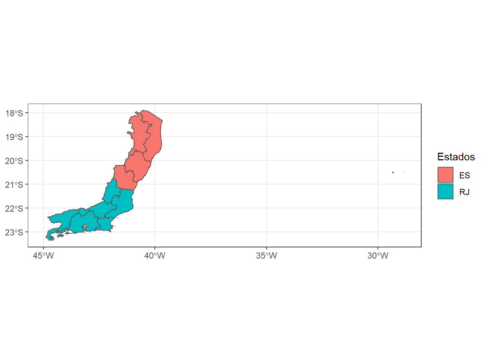
8.5.1.2 Regiões geográficas intermediárias
As regiões geográficas intermediárias são parte de uma nova divisão geográfica, criada em 2017, pelo IBGE. Foram concebidas para substituir as mesorregiões. No geobr, utilizamos a função read_intermediate_region() para representá-las. Essa função segue a mesma lógica exposta para as mesorregiões.
read_intermediate_region(code_intermediate = "all",
year = 2020,
showProgress = F) %>%
ggplot()+
geom_sf()+
theme_bw()8.5.2 Microrregiões
read_micro_region(code_micro = "all",
year = 2020,
showProgress = FALSE) %>%
ggplot() +
geom_sf()+
theme_bw()
8.5.2.1 Selecionando Microrregiões
# Selecionando as microrregiões do estado do Rio Grande do Sul
read_micro_region(code_micro = "RS",
year = 2020,
showProgress = FALSE) %>%
ggplot() +
geom_sf()+
theme_bw()Using year 2020# Selecionando as microrregiões dos estados de Santa Catarina e Paraná
read_micro_region(code_micro = "all",
year = 2020,
showProgress = FALSE) %>%
dplyr::filter(abbrev_state %in% c("SC", "PR")) %>%
ggplot()+
geom_sf(aes(fill = abbrev_state))+
theme_bw()+
labs(fill = "Estados")# Selecionando apenas uma microrregião - Chapecó/SC
read_micro_region(code_micro = 42002,
year = 2020,
showProgress = FALSE) %>%
ggplot()+
geom_sf()+
theme_bw()8.5.2.2 Regiões geográficas imediatas
Assim como as regiões geográficas intermediárias, as regiões geográficas imediatas são parte de uma nova divisão geográfica, criada em 2017, pelo IBGE. Foram concebidas para substituir as microrregiões. No geobr, utilizamos a função read_immediate_region() para representá-las. Essa função segue a mesma lógica exposta para as microrregiões.
read_immediate_region(code_immediate = "all",
year = 2020,
showProgress = F) %>%
ggplot()+
geom_sf()+
theme_bw()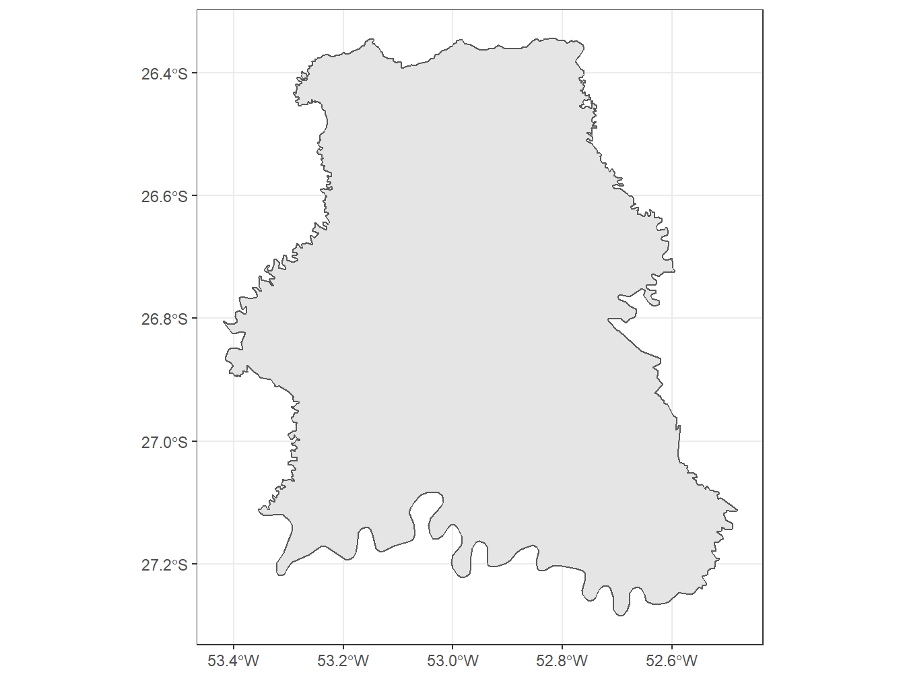
8.6 Municípios
Para representarmos os municípios do Brasil, utilizamos a função read_municipality().
read_municipality(code_muni = "all",
year = 2020,
showProgress = FALSE) %>%
ggplot() +
geom_sf()+
theme_bw()
8.6.1 Função lookup_muni()
A função lookup_muni() nos auxilia a encontrar informações referentes a códigos, nomenclaturas e classificações de um município em específico. Para isso, podemos indicar o nome de um município no argumento name_muni = para buscar suas informações.
# Buscando informações sobre o município de Piracicaba/SP
lookup_muni(name_muni = "Piracicaba") code_muni name_muni code_state name_state abbrev_state code_micro
3700 3538709 Piracicaba 35 São Paulo SP 35028
name_micro code_meso name_meso code_immediate name_immediate
3700 Piracicaba 3506 Piracicaba 350040 Piracicaba
code_intermediate name_intermediate
3700 3510 CampinasDa mesma forma, podemos buscar informações dos municípios a partir do código de identificação, utilizando o argumento code_muni =.
# Buscando informações sobre o município de código 3509502
lookup_muni(code_muni = 3509502) code_muni name_muni code_state name_state abbrev_state code_micro
3375 3509502 Campinas 35 São Paulo SP 35032
name_micro code_meso name_meso code_immediate name_immediate
3375 Campinas 3507 Campinas 350038 Campinas
code_intermediate name_intermediate
3375 3510 CampinasNo exemplo acima, verificamos que o código 3509502 é respectivo ao município de Campinas/SP.
8.6.2 Selecionando Municípios
# Selecionando os municípios do estado de São Paulo
read_municipality(code_muni = "SP",
year = 2020,
showProgress = FALSE) %>%
ggplot() +
geom_sf()+
theme_bw()Using year 2020
# Selecionando um municípios em específico - Piracicaba/SP
lookup_muni(name_muni = "Piracicaba") code_muni name_muni code_state name_state abbrev_state code_micro
3700 3538709 Piracicaba 35 São Paulo SP 35028
name_micro code_meso name_meso code_immediate name_immediate
3700 Piracicaba 3506 Piracicaba 350040 Piracicaba
code_intermediate name_intermediate
3700 3510 Campinasread_municipality(code_muni = 3538709,
year = 2020,
showProgress = FALSE) %>%
ggplot() +
geom_sf()+
theme_bw()8.6.3 Mapa do Brasil com as capitais
Podemos representar as capitais de cada estado no mapa do país. Para tanto, utilizamos as informações referentes aos municípios para construir tal mapa.
# Carregando dados dos estados
estados <- read_state(code_state = "all",
year = 2019,
showProgress = F)
# Carregando dados dos municípios
municipios <- read_municipality(code_muni = "all",
year = 2019,
showProgress = F)
# Criando data frame com as capitais de cada estado
cap <- data.frame(
name_state = c("Acre", "Alagoas", "Amapá", "Amazônas", "Bahia", "Ceará", "Espírito Santo", "Goiás", "Maranhão", "Mato Grosso", "Mato Grosso do Sul", "Minas Gerais", "Pará", "Paraíba", "Paraná", "Pernambuco", "Piauí", "Rio de Janeiro", "Rio Grande do Norte", "Rio Grande do Sul", "Rondônia", "Roraima", "Santa Catarina", "São Paulo", "Sergipe", "Tocantins", "Distrito Federal"),
name_muni = c("Rio Branco", "Maceió", "Macapá", "Manaus", "Salvador", "Fortaleza", "Vitória", "Goiânia", "São Luís", "Cuiabá", "Campo Grande", "Belo Horizonte", "Belém", "João Pessoa", "Curitiba", "Recife", "Teresina", "Rio De Janeiro", "Natal", "Porto Alegre", "Porto Velho", "Boa Vista", "Florianópolis", "São Paulo", "Aracaju", "Palmas", "Brasília")
)
# Selecionando os municípios referentes às capitais no banco de dados dos municípios
capitais <- dplyr::inner_join(municipios, cap)
# Plotando capitais no mapa do Brasil
ggplot()+
geom_sf(data = estados)+
geom_sf(data = capitais, fill = "red")+
theme_bw()Primeiramente, para a confecção do mapa anterior, carregamos os bancos de dados dos estados e dos municípios, respectivos às funções read_state() e read_municipality().
Em seguida, criamos um data frame denominado cap, contendo as capitais de cada estado, para, posteriormente, selecionar apenas os municípios respectivos às capitais. Para isso, utilizamos a função dplyr::inner_join() que selecionou apenas as capitais presentes no banco de dados do objeto municipios, baseado na correspondência com o data frame cap.
Por fim, para construir o mapa, foram utilizadas duas geometrias (geom_sf()). A primeira é relativa ao mapa dos estados do Brasil; já a segunda, às capitais dos estados. Portanto, para unir dois mapas distintos, devemos utilizar mais de uma geometria, cada qual correspondente à respectiva base de dados.
Contudo, perceba que as capitais foram representadas a partir dos polígonos que delimitam suas áreas. Para representá-las mais adequadamente, podemos criar apenas pontos no mapa que indiquem suas localizações.
ggplot()+
geom_sf(data = estados)+
geom_point(data = capitais,
aes(geometry = geom),
stat = "sf_coordinates",
color = "red")+
theme_bw()Para isso, na geometria referente às capitais, substituimos a geom_sf() por geom_point(), declarando os argumentos stat = "sf_coordinates" e geometry = geom dentro do aes(), ambos para indicar que os dados considerados estão no formato sf e que desejamos representá-los por pontos no mapa.
ggplot()+
geom_sf(data = estados)+
geom_point(data = capitais,
aes(geometry = geom),
stat = "sf_coordinates",
color = "red")+
geom_sf_text(data = estados,
aes(label = abbrev_state),
size = 2)+
geom_sf_text(data = capitais,
aes(label = name_muni),
size = 2,
nudge_y = 0.7,
nudge_x = 1)+
theme_bw()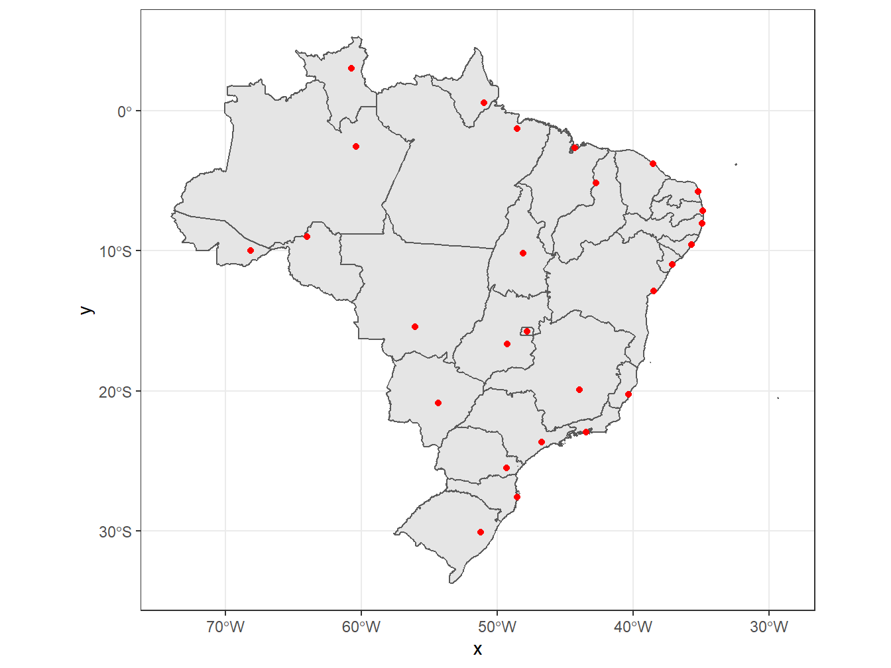
Para inserir legendas com o nome das capitais e as abreviações dos nomes dos estados, utilizamos a função geom_sf_text(), como demonstrado na subseção 8.3.2. Perceba que foram utilizadas duas geom_sf_text(), uma respectiva às abreviações dos estados e a outra, ao nome das capitais. Os argumentos nudge_y = e nudge_x = servem para reordenar o posicionamento das legendas no mapa, cada qual referente ao eixo vertical e horizontal, respectivamente.
8.6.4 Sedes municipais
A função read_municipal_seat() nos retorna as prefeituras das cidades entre os anos de 1872 e 2010. Por definição, a prefeitura é uma sede municipal do poder executivo municipal.
read_municipal_seat(year = 2010,
showProgress = F) %>%
ggplot()+
geom_sf()+
theme_bw()# Selecionando as prefeituras do estado de São Paulo
read_municipal_seat(year = 2010,
showProgress = F) %>%
dplyr::filter(abbrev_state == "SP") %>%
ggplot()+
geom_sf()+
theme_bw()Perceba que essa função nos retorna pontos no mapa, diferentemente dos exemplos anteriores, que nos retornavam polígonos. Essa diferença pode ser percebida a partir da classe da coluna geom:
# Verificando a classe da coluna `geom` da função `read_municipal_seat()`
prefeituras <- read_municipal_seat(year = 2010,
showProgress = F)
class(prefeituras$geom)[1] "sfc_POINT" "sfc" Note que a classe da coluna geom da função read_municipal_seat() é do tipo sfc_POINT, ou seja, uma classe que nos retorna pontos nos mapas.
# Verificando a classe da coluna `geom` da função `read_municipality()`
municipios <- read_municipality(code_muni = "all",
year = 2020,
showProgress = FALSE)
class(municipios$geom)[1] "sfc_MULTIPOLYGON" "sfc" Por outro lado, a classe da coluna geom da função read_municipality() é do tipo sfc_MULTIPOLYGON, portanto, nos retorna polígonos para formar os mapas.
Assim, podemos unir, em um único mapa, os municípios (read_municipality()) e as prefeituras (read_municipal_seat()):
# Selecionando os municípios do estado de São Paulo
municipios_sp <- read_municipality(code_muni = "SP",
year = 2010,
showProgress = F)
# Selecionando as prefeituras do estado de São Paulo
prefeituras_sp <- read_municipal_seat(year = 2010,
showProgress = F) %>%
dplyr::filter(abbrev_state == "SP")
# Plotando municípios e prefeituras
ggplot()+
geom_sf(data = municipios_sp, fill = "#F8766D", color = "lightgrey")+
geom_sf(data = prefeituras_sp, size = 1.3)+
theme_bw()Using year 2010
Using year 2010A primeira geometria é correspondente ao mapa dos municípios de São Paulo, que foi sobreposto pela segunda geometria, referente ao mapa das prefeituras dos municípios de São Paulo.
8.7 Bairros/Subdistritos/Distritos
A função read_neighborhood() retorna os limites de bairros/subdistritos/distritos de 720 municípios brasileiros. Os dados são baseados em agregações dos setores censitários do censo brasileiro. Atualmente, apenas dados de 2010 estão disponíveis.
read_neighborhood(year = 2010,
showProgress = F) %>%
ggplot()+
geom_sf()+
theme_bw()
# Selecionando os limites dos bairros do município de Piracicaba/SP
read_neighborhood(year = 2010,
showProgress = F) %>%
filter(name_muni == "Piracicaba") %>%
ggplot()+
geom_sf()+
theme_bw()library(gghighlight)
# Selecionando os limites dos bairros do município de Piracicaba/SP, destacando o bairro Agronomia
read_neighborhood(year = 2010,
showProgress = F) %>%
filter(name_muni == "Piracicaba") %>%
ggplot()+
geom_sf()+
gghighlight::gghighlight(name_neighborhood == "Agronomia")+
geom_sf_text(aes(label = name_neighborhood), nudge_y = 0.003)+
theme_bw()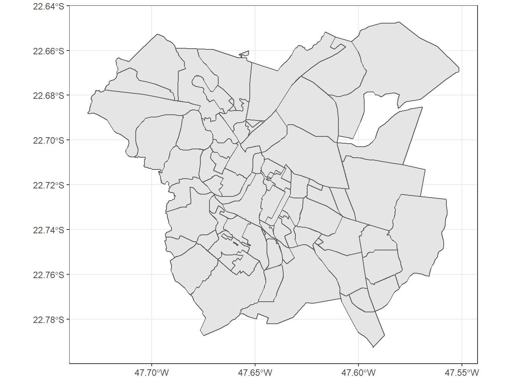
No mapa acima, construímos o mapa com os bairros de Piracicaba/SP, destacando o bairro Agronomia - onde se localiza a ESALQ/USP - utilizando a função gghighlight::gghighlight().
8.8 Regiões Metropolitanas
A função read_metro_area() retorna as regiões metropolitanas do Brasil. Essas regiões são definidas a partir de legislações estaduais.
read_metro_area(year = 2018,
showProgress = F) %>%
ggplot()+
geom_sf()+
theme_bw()# Adicionando as regiões metropolitanas ao mapa do Brasil, dividido por estados
estados <- read_state(code_state = "all",
year = 2019,
showProgress = F)
reg_metrop <- read_metro_area(year = 2018,
showProgress = F)
ggplot()+
geom_sf(data = estados)+
geom_sf(data = reg_metrop, fill = "orange")+
theme_bw()# Selecionando as regiões metropolitanas do Rio de Janeiro
rj <- read_state(code_state = "RJ",
year = 2019,
showProgress = F)
rj_metrop <- read_metro_area(year = 2018,
showProgress = F) %>%
dplyr::filter(abbrev_state == "RJ")
ggplot()+
geom_sf(data = rj)+
geom_sf(data = rj_metrop, fill = "orange", color = "black")+
theme_bw()Using year 2019Using year 20188.9 Áreas urbanas
A função read_urban_area() retorna as áreas urbanas do Brasil nos anos de 2005 e 2015, segundo a metodologia do IBGE. Informações adicionais sobre a metodologia utilizada estão disponíveis em: https://biblioteca.ibge.gov.br/visualizacao/livros/liv100639.pdf.
read_urban_area(year = 2015,
showProgress = F) %>%
ggplot()+
geom_sf()+
theme_bw()# Adicionando as áreas ubanas ao mapa do Brasil, dividido por estados
## Estados
estados <- read_state(code_state = "all",
year = 2019,
showProgress = F)
## 2005
urb_2005 <- read_urban_area(year = 2005,
showProgress = F) %>%
ggplot()+
geom_sf(data = estados)+
geom_sf(color = "black")+
theme_bw()+
labs(title = "2005")
urb_2005## 2015
urb_2015 <- read_urban_area(year = 2015,
showProgress = F) %>%
ggplot()+
geom_sf(data = estados)+
geom_sf(color = "black")+
theme_bw()+
labs(title = "2015")
urb_2015
# Selecionando as áreas urbanas de São Paulo em 2015
## Selecionando os códigos dos municípios de SP
municipios_sp <- read_municipality(code_muni = "SP",
year = 2015,
showProgress = F)
code_muni_sp <- data.frame(code_muni = municipios_sp$code_muni)
## Carregando os dados das áreas urbanas
urb <- read_urban_area(year = 2015,
showProgress = F)
## Selecionando os códigos das áreas urbanas de SP
urb_sp <- inner_join(urb, code_muni_sp)
## Plotando as áreas urbanas de SP
ggplot()+
geom_sf(data = municipios_sp, alpha = 0.5) +
geom_sf(data = urb_sp, color = "#F8766D")+
theme_bw()Using year 2015
Using year 2015Joining, by = "code_muni"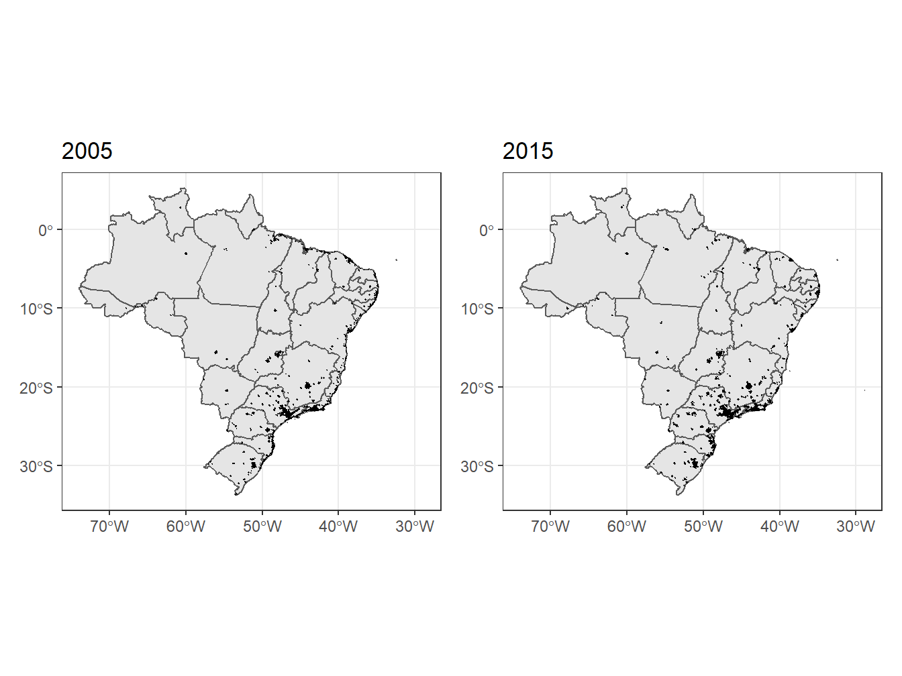
8.10 Áreas mínimas comparáveis (AMCs)
A função read_comparable_areas() traz os dados das Áreas mínimas comparáveis (AMCs) dos municípios. Estes dados são referentes a área agregada do menor número de municípios necessários para que as comparações intertemporais sejam geograficamente consistentes.
Os dados estão disponíveis para qualquer combinação de anos censitários entre 1872 e 2010. Esses conjuntos de dados são gerados com base no código Stata, originalmente desenvolvido por Philipp Ehrl (2017), sendo convertido para a linguagem R pela equipe desenvolvedora do pacote geobr.
read_comparable_areas(start_year = 1980,
end_year = 2010,
showProgress = F) %>%
ggplot()+
geom_sf()+
theme_bw()Esta função recebe os argumentos start_year = e end_year = para indicar o ano inicial e final, respectivamente, como referência do período a ser considerado.
Como resultado, obtem-se um código da área mínima comparável (code_amc) e uma lista com código(s) de municípios (list_code_muni_2010) respectivos à área mínima comparável do período em questão.
amc <- read_comparable_areas(start_year = 1980,
end_year = 2010,
showProgress = F) %>%
filter(code_amc == 1021) %>%
ggplot()+
geom_sf()+
theme_bw()+
labs(title = "Área mínima comparável \n1980", x="", y="")
amcmuni <- read_municipality(code_muni = "all",
year = 2010,
showProgress = F) %>%
filter(code_muni %in% c(1301001,1301951)) %>%
ggplot()+
geom_sf()+
geom_sf_text(aes(label = name_muni))+
theme_bw()+
labs(title = "Municípios \n2010", x="", y="")
muniO mapa acima representa a área mínima comparável dos municípios de Carauari e Itamarati (AM), no período entre 1980 e 2010.
8.11 Mapas temáticos
Depois de apresentadas algumas das funções presentes no pacote geobr, demonstraremos alguns exemplos aplicados utilizando mapas em conjunto à bases de dados.
8.11.1 Censo agropecuário 2006 e 2017
Para tanto, utilizaremos os dados dos Censos Agropecuários de 2006 e 2017, realizados pelo Instituto Brasileiro de Geografia e Estatística (IBGE). Dentre as diversas informações que o censo coleta, iremos utilizar a área e o número de estabelecimentos agropecuários em 2006 e 2017, para os estados brasileiros e os municípios de Mato Grosso.
Os dados foram coletados do Sistema IBGE de Recuperação Automática (SIDRA), a partir de duas fontes. Para 2006, utilizou-se a Tabela 263 e para 2017, a Tabela 6754.
Para fazer o download dos dados compilados e processados, clique aqui.
censo_agro_06_17 <- read_excel("dados_mapa/DADOS_CENSO_AGROPEC.xlsx")
glimpse(censo_agro_06_17)Rows: 195
Columns: 6
$ nivel <chr> "UF", "UF", "UF", "UF", "UF", "UF", "UF", "UF", "UF", "U~
$ cod <dbl> 11, 12, 13, 14, 15, 16, 17, 21, 22, 23, 24, 25, 26, 27, ~
$ localidade <chr> "Rondônia", "Acre", "Amazonas", "Roraima", "Pará", "Amap~
$ n_estab <dbl> 87078, 29483, 66784, 10310, 222029, 3527, 56567, 287039,~
$ area_estab_ha <dbl> 8433868, 3528543, 3668753, 1717532, 22925331, 873789, 14~
$ ano <dbl> 2006, 2006, 2006, 2006, 2006, 2006, 2006, 2006, 2006, 20~A base de dados apresenta 195 observações e 6 variáveis, sendo elas: o nível geográfico (nivel), podendo ser um estado (UF) ou um município (MU); os códigos de identificação dos locais (cod); a localidade, seja dos estados brasileiros ou dos municípios de Mato Grosso; os anos presentes, no caso, 2006 e 2017; e os valores do número de estabelecimentos (n_estab) e da área (area_estab_ha), em hectares.
Estados
Nessa etapa, iremos fazer um mapa coroplético dos estados. Um mapa coroplético é um tipo de mapa temático que representa uma superfície estatística por meio de áreas simbolizadas com cores, sombreamentos ou padrões de acordo com uma escala que representa a proporcionalidade da variável estatística. Nesse caso, iremos utilizar o número e as respectivas áreas dos estabelecimentos agropecuários, em 2006 e 2017 para criarmos o nosso mapa.
Primeiramente, iremos realizar algumas mudanças na base de dados.
censo_estados <- censo_agro_06_17 %>%
filter(nivel == "UF") %>%
mutate(n_estab_1000 = n_estab/1000,
area_estab_100mil_ha = area_estab_ha/100000) %>%
select(cod, localidade, ano, n_estab_1000, area_estab_100mil_ha) %>%
pivot_longer(cols = c(n_estab_1000, area_estab_100mil_ha),
names_to = "var",
values_to = "valores")Na função mutate(), convertemos os valores de número de estabelecimentos para mil estabelecimentos e a área, para 100 mil hectares. Posteriormente, selecionamos as variáveis de interesse com a select() e realizamos a pivotagem das variáveis relativas aos estabelecimentos e áreas para as colunas var e valores.
Agora, precisamos carregar os dados geográficos dos estados a partir da função geobr::read_state(), como visto na seção 8.3.
mapa_estados <- read_state(code_state = "all", showProgress = F)
glimpse(mapa_estados)Rows: 27
Columns: 6
$ code_state <dbl> 11, 12, 13, 14, 15, 16, 17, 21, 22, 23, 24, 25, 26, 27, 2~
$ abbrev_state <chr> "RO", "AC", "AM", "RR", "PA", "AP", "TO", "MA", "PI", "CE~
$ name_state <chr> "Rondônia", "Acre", "Amazonas", "Roraima", "Pará", "Amapá~
$ code_region <dbl> 1, 1, 1, 1, 1, 1, 1, 2, 2, 2, 2, 2, 2, 2, 2, 2, 3, 3, 3, ~
$ name_region <chr> "Norte", "Norte", "Norte", "Norte", "Norte", "Norte", "No~
$ geom <MULTIPOLYGON [°]> MULTIPOLYGON (((-63.32721 -..., MULTIPOLYGON~Tendo os dados do censo agropecuário, precisamos juntá-los aos dados geográficos em um único data frame, para criarmos o mapa temático. Para isso, utilizaremos a função dplyr::full_join(), tendo como base as colunas name_state e code_state.
Portanto, antes de uni-las, iremos modificar os nomes das colunas do banco de dados referente ao censo, a fim padronizar as nomenclaturas e possibilitar a utilização da função de junção dos bancos de dados.
# Modificando o nome das colunas do bando de dados do censo
censo_estados <- censo_estados %>%
rename("name_state" = localidade,
"code_state" = cod)
# Juntando os bancos de dados
dados_mapa_estados <- full_join(mapa_estados, censo_estados, by = c("name_state", "code_state"))Feito isso, iniciaremos a confecção dos mapas, começando pelos dados do censo agropecuário de 2006.
# Censo 2006 - Nº de estabelecimentos
dados_mapa_estados %>%
filter(ano == 2006,
var == "n_estab_1000") %>%
ggplot()+
geom_sf(aes(fill = valores))
O mapa coroplético acima representa o número de estabelecimentos agropecuários, em 2006, de acordo com os estados. Para a sua confecção, primeiramente, filtramos o ano de 2006 e a variável relativa ao número de estabelecimentos (n_estab_1000). Em seguida, dentro do aes() de geometria geom_sf() definimos a coluna de valores como parâmetro do argumento fill =, ou seja, os valores relativos ao número de estabelecimentos agropecuários serão preenchidos no mapa, de acordo com o estado.
Assim, de maneira bem simples, podemos confeccionar mapas coropléticos a partir do geobr, junto a base de dados de interesse. A seguir, demontraremos como melhorar a estética dos mapas
# Censo 2006 - Nº de estabelecimentos
dados_mapa_estados %>%
filter(ano == 2006,
var == "n_estab_1000") %>%
ggplot()+
geom_sf(aes(fill = valores))+
scale_fill_distiller(direction = 0,
limits = c(0, 800),
name = "Nº estabelecimentos (por 1000 und.)",
guide = guide_legend(
keyheight = unit(3, units = "mm"),
keywidth=unit(12, units = "mm"),
label.position = "bottom",
title.position = 'top', nrow=1))+
labs(title = "Censo Agropecuário 2006",
subtitle = "Número de estabelecimentos agropecuários por estado, a cada 1000 unidades",
caption = "Fonte: IBGE - Censo Agropecuário 2006")+
theme_void()+
theme(plot.title = element_text(size= 15, hjust = 0.5),
plot.subtitle = element_text(size= 10),
plot.caption = element_text(size=8, hjust = 0.5, vjust = 7),
legend.position = c(0.88, 0.12))A função scale_fill_distiller() define a paleta de cores a serem utilizadas, bem como os parâmetros referentes à legenda. A labs() permite inserir rótulos ao mapa, seja o título, subtítulo, fonte, dentre outros. Também definimos a temática estética do mapa ao definir o tamanho de letras e posicionamentos no mapa.
O mapa a seguir segue a mesma lógica do anterior, porém, representando a área dos estabelecimentos agropecuários e utilizando a paleta de cores da função scale_fill_gradient2().
# Censo 2006 - área dos estabelecimentos
dados_mapa_estados %>%
filter(ano == 2006,
var == "area_estab_100mil_ha") %>%
ggplot()+
geom_sf(aes(fill = valores))+
scale_fill_gradient2(limits = c(0, 550),
name = "Área estabelecimentos (por 100 mil ha)",
guide = guide_legend(
keyheight = unit(3, units = "mm"),
keywidth=unit(10, units = "mm"),
label.position = "bottom",
title.position = 'top', nrow=1))+
labs(title = "Censo Agropecuário 2006",
subtitle = "Área dos estabelecimentos agropecuários por estado, a cada 100 mil hectares",
caption = "Fonte: IBGE - Censo Agropecuário 2006")+
theme_void()+
theme(plot.title = element_text(size= 15, hjust = 0.5),
plot.subtitle = element_text(size= 10, hjust = 0.5),
plot.caption = element_text(size=8, hjust = 0.5, vjust = 7),
legend.position = c(0.88, 0.12))Também podemos juntar dois mapas tamáticos. No exemplo a seguir, uniremos o mapa do número de estabelecimentos com a área, de acordo com o censo agropecuário de 2006.
# Censo 2006 - Nº estabelecimentos e área
dados_mapa_estados %>%
filter(ano == 2006) %>%
ggplot()+
geom_sf(aes(fill = valores))+
facet_wrap(~var,
labeller = as_labeller(
c(area_estab_100mil_ha = "Área estabelecimentos",
n_estab_1000 = "Nº estabelecimentos")))+
scale_fill_distiller(direction = 0,
limits = c(0, 800),
name = "Quantidade e Área estabelecimentos",
guide = guide_legend(
keyheight = unit(3, units = "mm"),
keywidth=unit(11, units = "mm"),
label.position = "bottom",
title.position = 'top', nrow=1))+
labs(title = "Censo Agropecuário 2006",
subtitle = "Quantidade e área de estabelecimentos agropecuários, por estado",
caption = "Fonte: IBGE - Censo Agropecuário 2006")+
theme_void()+
theme(plot.title = element_text(size= 15, hjust = 0.5, vjust = 2),
plot.subtitle = element_text(size= 11, hjust = 0.5, vjust = 2.5),
plot.caption = element_text(size=8, hjust = 0.5, vjust = -2),
legend.position = c(0.49, 0.06))Para isso, utilizamos a função facet_wrap(), definindo a variável var como parâmetro para dividir os mapas. Além disso, dentro dessa mesma função, utilizamos a labeller = as_labeller() para alterar os nomes das observações que compõem a coluna var, a fim de ficarem mais apresentáveis ao mapa.
Podemos proceder da mesma forma para comparar o censo de 2006 com o de 2017, apenas alterando o parâmetro da função facet_wrap() para a coluna ano.
# Censos 2006 e 2017 - Nº estabelecimentos
dados_mapa_estados %>%
filter(var == "n_estab_1000") %>%
ggplot()+
geom_sf(aes(fill = valores))+
facet_wrap(~ano)+
scale_fill_distiller(direction = 0,
limits = c(0, 800),
name = "Nº estabelecimentos (por 1000 und.)",
guide = guide_legend(
keyheight = unit(3, units = "mm"),
keywidth=unit(11, units = "mm"),
label.position = "bottom",
title.position = 'top', nrow=1))+
labs(title = "Censo Agropecuário 2006 e 2017",
subtitle = "Número de estabelecimentos agropecuários por estado, a cada 1000 unidades",
caption = "Fonte: IBGE - Censo Agropecuário 2006 e 2017")+
theme_void()+
theme(plot.title = element_text(size= 15, hjust = 0.5, vjust = 2),
plot.subtitle = element_text(size= 11, hjust = 0.5, vjust = 2.5),
plot.caption = element_text(size=8, hjust = 0.5, vjust = -2),
legend.position = c(0.49, 0.06))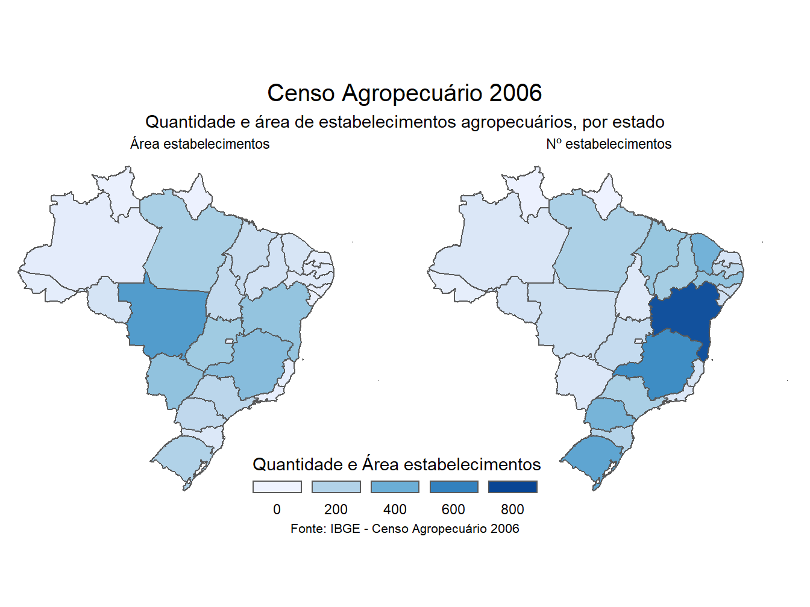
# Censos 2006 e 2017 - Área
dados_mapa_estados %>%
filter(var == "area_estab_100mil_ha") %>%
ggplot()+
geom_sf(aes(fill = valores))+
facet_wrap(~ano)+
scale_fill_distiller(direction = 0,
limits = c(0, 800),
name = "Área estabelecimentos (por 100 mil ha)",
guide = guide_legend(
keyheight = unit(3, units = "mm"),
keywidth=unit(11, units = "mm"),
label.position = "bottom",
title.position = 'top', nrow=1))+
labs(title = "Censo Agropecuário 2006 e 2017",
subtitle = "Área dos estabelecimentos agropecuários por estado, a cada 100 mil hectares",
caption = "Fonte: IBGE - Censo Agropecuário 2006 e 2017")+
theme_void()+
theme(plot.title = element_text(size= 15, hjust = 0.5, vjust = 2),
plot.subtitle = element_text(size= 11, hjust = 0.5, vjust = 2.5),
plot.caption = element_text(size=8, hjust = 0.5, vjust = -2),
legend.position = c(0.49, 0.06))Municípios de Mato Grosso
Podemos proceder da mesma maneira para criar mapas coroplético a partir de outra dimensão geográfica. Nesse caso, faremos para os municípios do estado do Mato Grosso, de acordo com os dados do censo agropecuário de 2017.
# Organizando dados do censo agropecuário 2017
censo_muni_MT <- censo_agro_06_17 %>%
filter(nivel == "MU") %>%
mutate(n_estab_100 = n_estab/100,
area_estab_100mil_ha = area_estab_ha/100000) %>%
select(cod, localidade, ano, n_estab_100, area_estab_100mil_ha) %>%
pivot_longer(cols = c(n_estab_100, area_estab_100mil_ha),
names_to = "var",
values_to = "valores") %>%
rename("code_muni" = cod)
# Carregando dados dos municípios de MT
mapa_muni_MT <- read_municipality(code_muni = "MT", showProgress = F)
# Juntando as bases de dados a partir da coluna `code_muni`
dados_mapa_muni <- full_join(mapa_muni_MT, censo_muni_MT, by = "code_muni") %>%
select(code_muni, name_muni, ano, var, valores, geom)Using year 2010# Censo 2017 - MT - Nº estabelecimentos
dados_mapa_muni %>%
filter(var == "n_estab_100") %>%
ggplot()+
geom_sf(aes(fill = valores))+
scale_fill_distiller(direction = 0,
limits = c(0, 40),
guide = guide_legend(
keyheight = unit(5, units = "mm"),
keywidth=unit(5, units = "mm"),
label.position = "left"))+
labs(title = "Censo Agropecuário 2017",
subtitle = "Número de estabelecimentos agropecuários por município de MT, a cada 100 unidades",
caption = "Fonte: IBGE - Censo Agropecuário 2017",
fill = "")+
theme_void()+
theme(plot.title = element_text(size= 13, hjust = 0.5),
plot.subtitle = element_text(size= 10, hjust = 0.5),
plot.caption = element_text(size=9, hjust = 0.5))# Censo 2017 - MT - Área
dados_mapa_muni %>%
filter(var == "area_estab_100mil_ha") %>%
ggplot()+
geom_sf(aes(fill = valores))+
scale_fill_gradient2(limits = c(0, 20),
guide = guide_legend(
keyheight = unit(5, units = "mm"),
keywidth=unit(5, units = "mm"),
label.position = "left"))+
labs(title = "Censo Agropecuário 2017",
subtitle = "Área dos estabelecimentos agropecuários por município de MT, a cada 100 mil hectares",
caption = "Fonte: IBGE - Censo Agropecuário 2017",
fill = "")+
theme_void()+
theme(plot.title = element_text(size= 13, hjust = 0.5),
plot.subtitle = element_text(size= 10, hjust = 0.5),
plot.caption = element_text(size=9, hjust = 0.5))
# Nº estabelecimentos e área
dados_mapa_muni %>%
ggplot()+
geom_sf(aes(fill = valores))+
facet_wrap(~var,
labeller = as_labeller(
c(area_estab_100mil_ha = "Área estabelecimentos",
n_estab_100 = "Nº estabelecimentos")))+
scale_fill_gradient2(limits = c(0, 40),
guide = guide_legend(
keyheight = unit(2, units = "mm"),
keywidth=unit(7, units = "mm"),
label.position = "bottom", nrow = 1))+
labs(title = "Censo Agropecuário 2017",
subtitle = "Quantidade e área de estabelecimentos agropecuários por município de MT",
caption = "Fonte: IBGE - Censo Agropecuário 2017",
fill = "")+
theme_void()+
theme(plot.title = element_text(size= 13, hjust = 0.5, vjust = 2),
plot.subtitle = element_text(size= 10, hjust = 0.5, vjust = 2),
plot.caption = element_text(size=9, hjust = 0.5, vjust = -2),
legend.position = c(0.52, 0.06))8.12 Biomas
O pacote geobr também possui uma base de dados para os biomas e a zona costeira do Brasil, baseado nos dados originais do IBGE - Biomas e Sistema Costeiro-Marinho. Para tanto, utilizamos a função read_biomes().
read_biomes(showProgress = F) %>%
ggplot()+
geom_sf(aes(fill = name_biome)) +
scale_fill_brewer(palette = "Pastel1")+
theme_bw()+
labs(fill = "Biomas")# Selecionando um bioma - Cerrado
read_biomes(showProgress = F) %>%
dplyr::filter(name_biome == "Cerrado") %>%
ggplot()+
geom_sf(aes(fill = name_biome)) +
scale_fill_brewer(palette = "Pastel1")+
theme_bw()+
labs(fill = "")# Adicionando um bioma ao mapa do Brasil - Sistema Costeiro
brasil <- read_country(showProgress = F)
read_biomes(showProgress = F) %>%
dplyr::filter(name_biome == "Sistema Costeiro") %>%
ggplot()+
geom_sf(data = brasil)+
geom_sf(aes(fill = name_biome)) +
scale_fill_brewer(palette = "Blues")+
theme_bw()+
labs(fill = "")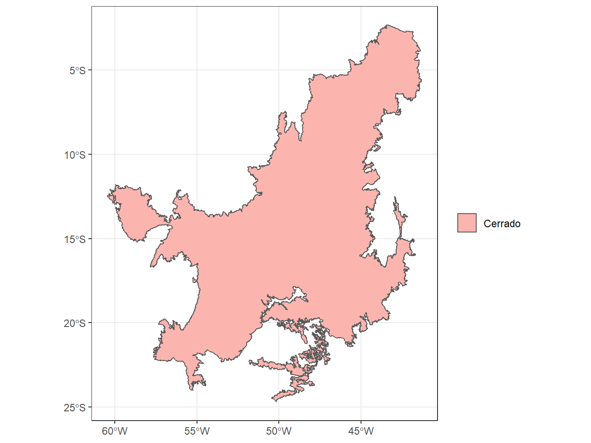
No exemplo acima, a primeira geometria é correspondente ao mapa do país, sendo a outra, ao bioma costeiro. O exemplo a seguir segue a mesma lógica explicada, porém, agora, para mais de um tipo de bioma.
# Adicionando mais de um bioma ao mapa do Brasil
brasil <- read_country(showProgress = F)
read_biomes(showProgress = F) %>%
dplyr::filter(name_biome %in% c("Amazônia", "Mata Atlântica", "Pantanal")) %>%
ggplot()+
geom_sf(data = brasil)+
geom_sf(aes(fill = name_biome)) +
scale_fill_brewer(palette = "Greens")+
theme_bw()+
labs(fill = "Biomas")
# Adicionando os biomas ao mapa do Brasil, dividido por estados
brasil <- read_country(showProgress = F)
estados <- read_state(code_state = "all",
year = 2019,
showProgress = F)
bioma <- read_biomes(showProgress = F)
ggplot()+
geom_sf(data = bioma, aes(fill = name_biome), color = 0)+
geom_sf(data = estados, alpha = 0, color = "antiquewhite4")+
geom_sf(data = brasil, alpha = 0, color = "black", size = 0.5)+
scale_fill_brewer(palette = "Pastel1")+
theme_bw()+
geom_sf_text(data = estados, aes(label = abbrev_state), size = 1.7)+
labs(fill = "Biomas", x="", y="")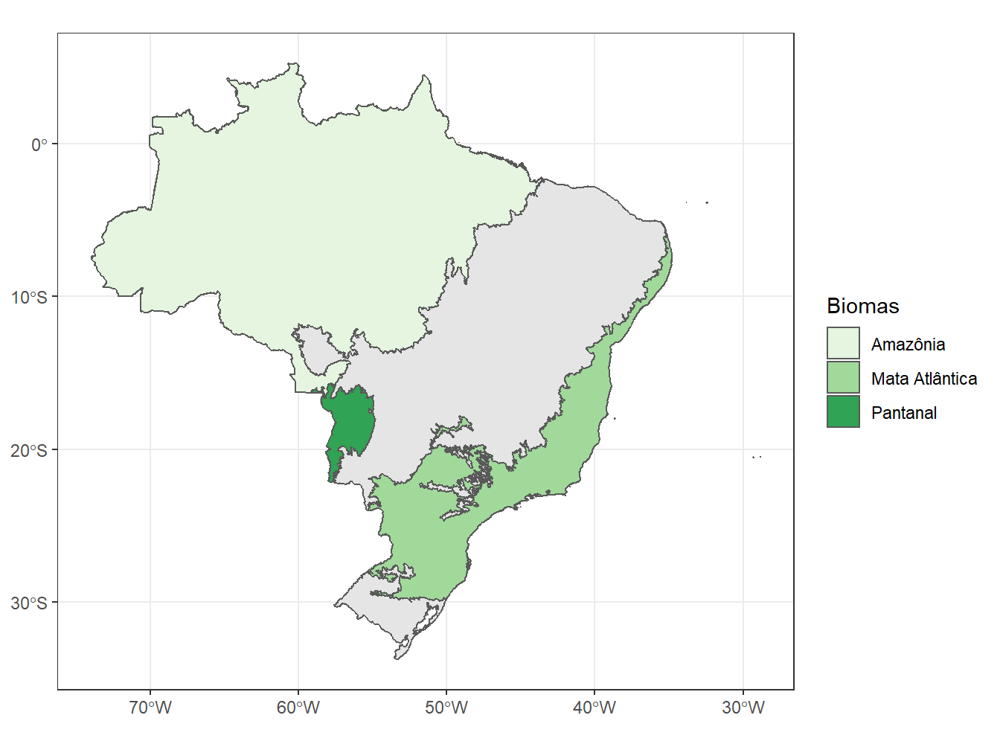
O exemplo acima juntou o mapa do país, dividido por estados, com o dos biomas. Para isso, tivemos que sobrepor os mapas para formar um único. Em cada um dos geom_sf(), declaramos - a partir do argumento data = - qual base de dados foi considerada.
No caso da geometria referente aos biomas (data = bioma), preenchemos com os tipos de biomas (fill = name_biome) e retiramos as cores das bordas com o color = 0. Em seguida, sobrepomos ao mapa dos biomas o mapa dos estados (data = estados); uma vez que precisamos apenas das linhas que demarcam os estados, utilizamos o argumento alpha = 0 para deixar o interior dos estados transparentes. Por fim, o data = brasil foi utilizado para realçar as bordas que delimitam o país, sendo necessário utilizar novamente o alpha = 0 para manter apenas as bordas e deixar transparente o interior do mapa do Brasil.
8.13 Amazônia Legal
A função read_amazon() nos retorna a área da Amazônia Legal Brasileira, definida pela lei n.12.651/2012. Os presentes dados são do Ministério do Meio Ambiente (MMA) e podem ser acessados em: http://mapas.mma.gov.br/i3geo/datadownload.htm.
read_amazon(showProgress = F) %>%
ggplot()+
geom_sf()+
theme_bw()# Inserindo a área da Amazônia Legal Brasileira no mapa do Brasil, delimitado por estados
estados <- read_state(code_state = "all",
year = 2019,
showProgress = F)
read_amazon(showProgress = F) %>%
ggplot()+
geom_sf(fill = "lightgreen", color = 0)+
geom_sf(data = estados, alpha = 0)+
geom_sf_text(data = estados, aes(label = abbrev_state), size = 1.7)+
theme_bw()+
labs(x="", y="")8.14 Semiárido
A função read_semiarid() retorna os municípios que compunham o semiárido brasileiro nos anos de 2005 e 2017, baseado nos dados do IBGE - Semiárido Brasileiro.
read_semiarid(year = 2005,
showProgress = F) %>%
ggplot()+
geom_sf()+
theme_bw()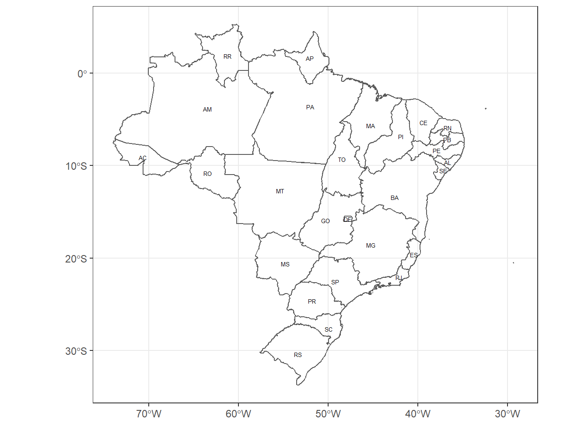
# Inserindo os municípios do semiárido no mapa do Brasil, dividido por estados, no ano de 2017
estados <- read_state(code_state = "all",
year = 2019,
showProgress = F)
read_semiarid(year = 2017,
showProgress = F) %>%
ggplot()+
geom_sf(fill = "#F8766D")+
geom_sf(data = estados, alpha = 0)+
theme_bw()No exemplo acima, podemos retirar as linhas dos municípios e colocar apenas a mancha dos municípios do semiário no mapa do Brasil, inserindo o argumento color = 0 dentro do primeiro geom_sf(), esse referente à geometria dos municípios do semiárido.
# Inserindo o semiárido no mapa do Brasil, dividido por estados, no ano de 2017
estados <- read_state(code_state = "all",
year = 2019,
showProgress = F)
read_semiarid(year = 2017,
showProgress = F) %>%
ggplot()+
geom_sf(fill = "#F8766D", color = 0)+
geom_sf(data = estados, alpha = 0)+
theme_bw()# Comparando o semiárido entre 2005 e 2017
estados <- read_state(code_state = "all",
year = 2019,
showProgress = F)
## 2005
semiarido_05 <- read_semiarid(year = 2005,
showProgress = F) %>%
ggplot()+
geom_sf(fill = "#F8766D",
color = 0)+
geom_sf(data = estados,
alpha = 0)+
theme_bw()+
labs(title = "2005")
semiarido_05## 2017
semiarido_17 <- read_semiarid(year = 2017,
showProgress = F) %>%
ggplot()+
geom_sf(fill = "#F8766D",
color = 0)+
geom_sf(data = estados,
alpha = 0)+
theme_bw()+
labs(title = "2017")
semiarido_17# Fazendo um mapa com somente os estados do semiárido
## Semiárido em 2005
semiarido_05 <- read_semiarid(year = 2005,
showProgress = F)
## Vetorizando os estados do semiárido em 2005
abbr_semiarido_05 <- as.vector(unique(semiarido_05$abbrev_state))
## Filtrando os estados do semiárido em 2005 na função read_state()
estados_semiarido_05 <- read_state(code_state = "all",
showProgress = F) %>%
dplyr::filter(abbrev_state %in% abbr_semiarido_05) %>%
ggplot()+
geom_sf(data = semiarido_05,
fill = "#F8766D",
color = 0)+
geom_sf(alpha = 0)+
theme_bw()+
labs(title = "2005", x="", y="")+
geom_sf_text(aes(label = abbrev_state), size = 2.3)
estados_semiarido_05## Semiárido em 2017
semiarido_17 <- read_semiarid(year = 2017,
showProgress = F)
## Vetorizando os estados do semiárido em 2017
abbr_semiarido_17 <- as.vector(unique(semiarido_17$abbrev_state))
## Filtrando os estados do semiárido em 2017 na função read_state()
estados_semiarido_17 <- read_state(code_state = "all",
showProgress = F) %>%
dplyr::filter(abbrev_state %in% abbr_semiarido_17) %>%
ggplot()+
geom_sf(data = semiarido_17,
fill = "#F8766D",
color = 0)+
geom_sf(alpha = 0)+
theme_bw()+
labs(title = "2017", x="", y="")+
geom_sf_text(aes(label = abbrev_state), size = 2.3)
estados_semiarido_17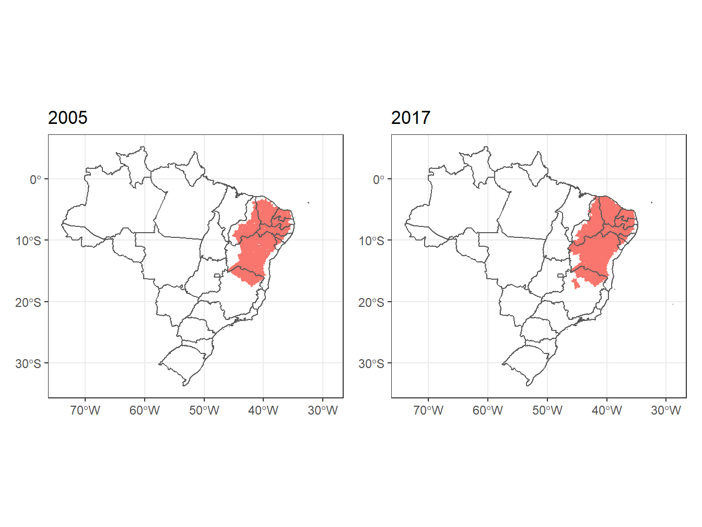
8.15 Áreas de conservação
Para trabalharmos com as áreas de conservação do Brasil, utilizamos a função read_conservation_units(). A última atualização foi feita em setembro de 2019, sendo baseada nos dados do Ministério do Meio Ambiente (MMA), podendo ser acessados em: http://mapas.mma.gov.br/i3geo/datadownload.htm.
areas_conservacao <- read_conservation_units(date = 201909,
showProgress = F)
dim(areas_conservacao)[1] 1934 15names(areas_conservacao) [1] "code_conservation_unit" "name_conservation_unit" "id_wcm"
[4] "category" "group" "government_level"
[7] "creation_year" "gid7" "quality"
[10] "legislation" "dt_ultim10" "code_u111"
[13] "name_organization" "date" "geom" A base de dados possui 1934 áreas de conservação registradas, sendo divididas por código da unidade de conservação (code_conservation_unit), nome da unidade de conservação (name_conservation_unit), categoria da unidade de conservação (category), nivel governamental (government_level), ano da criação (creation_year), nome da organização responsável (name_organization), dentre outros.
read_conservation_units(date = 201909,
showProgress = F) %>%
ggplot()+
geom_sf()+
theme_bw()# Áreas de conservação no mapa do Brasil
estados <- read_state(code_state = "all",
year = 2019,
showProgress = F)
read_conservation_units(date = 201909,
showProgress = F) %>%
ggplot()+
geom_sf(fill = "lightgreen")+
geom_sf(data = estados, alpha = 0)+
theme_bw()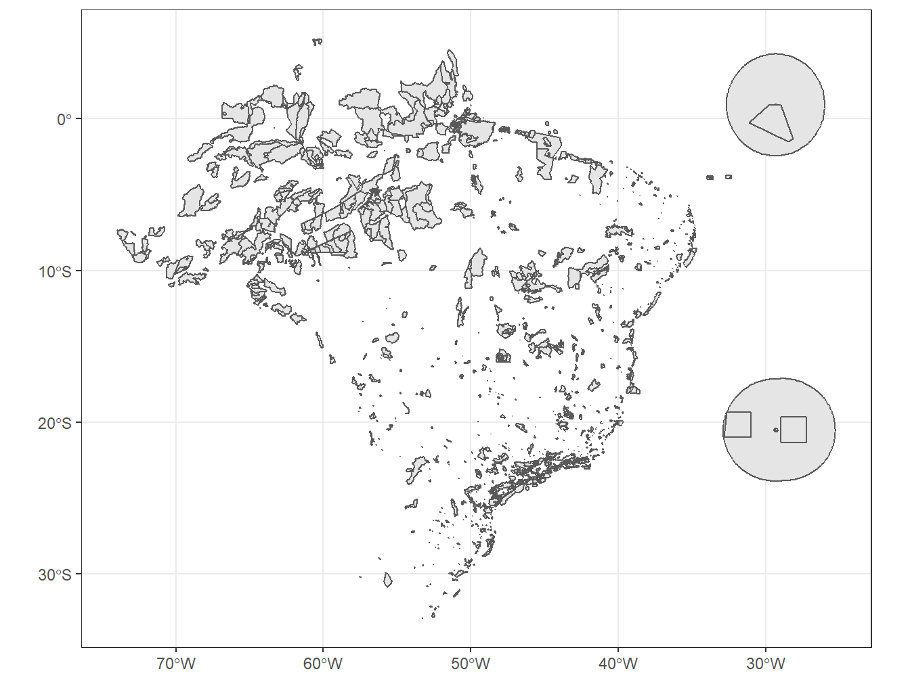
8.16 Terras indígenas
Para trabalharmos com áreas de terras indígenas, utilizamos a função read_indigenous_land(). O respectivo conjunto de dados abrange todas as terras indígenas, de todas as etnias e em diferentes estágios de demarcação. Os dados são de setembro de 2019 e março de 2021, oriundos da Fundação Nacional do Índio (FUNAI).
read_indigenous_land(date = 201907,
showProgress = F) %>%
ggplot()+
geom_sf()+
theme_bw()# Áreas de terras indígenas no mapa do Brasil, dividido por estados
estados <- read_state(code_state = "all",
year = 2019,
showProgress = F)
read_indigenous_land(date = 201907,
showProgress = F) %>%
ggplot()+
geom_sf(fill = "#ED8141")+
geom_sf(data = estados, alpha = 0)+
theme_bw()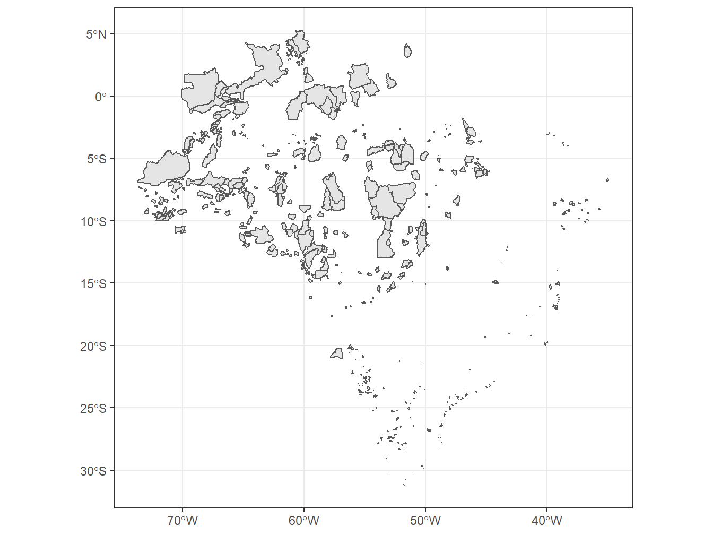
# Selecionando terras indígenas de um estado - Acre
acre <- read_municipality(code_muni = "all",
year = 2019,
showProgress = F) %>%
dplyr::filter(abbrev_state == "AC")
read_indigenous_land(date = 201907,
showProgress = F) %>%
filter(abbrev_state == "AC") %>%
ggplot()+
geom_sf(data = acre)+
geom_sf(fill = "#ED8141")+
theme_bw()# Separando as terras indígenas por etnia
acre <- read_municipality(code_muni = "all",
year = 2019,
showProgress = F) %>%
dplyr::filter(abbrev_state == "AC")
read_indigenous_land(date = 201907,
showProgress = F) %>%
dplyr::filter(abbrev_state == "AC") %>%
ggplot()+
geom_sf(data = acre)+
geom_sf(aes(fill = etnia_nome))+
theme_bw()+
labs(fill = "Etnia")# Separando as terras indígenas por estágio de demarcação - Amazonas
amazonia <- read_municipality(code_muni = "all",
year = 2019,
showProgress = F) %>%
dplyr::filter(abbrev_state == "AM")
read_indigenous_land(date = 201907,
showProgress = F) %>%
dplyr::filter(abbrev_state == "AM") %>%
ggplot()+
geom_sf(data = amazonia)+
geom_sf(aes(fill = fase_ti))+
theme_bw()+
labs(fill = "Estágio de\ndemarcação")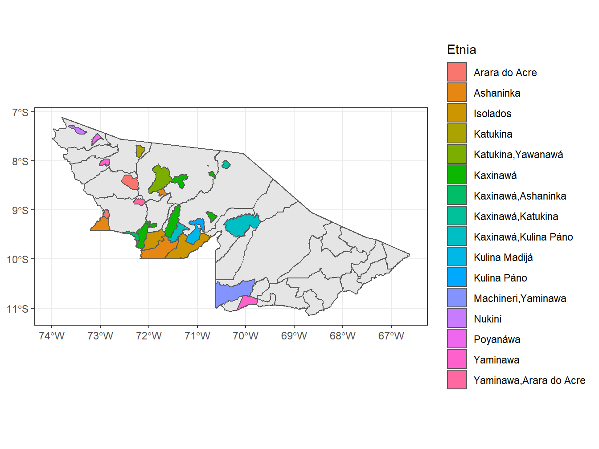
8.17 Áreas de risco de desastres naturais
A função read_disaster_risk_area() retorna dados oficiais de áreas de risco de desastres naturais no Brasil, para o ano de 2010, baseado na metodologia do IBGE e CEMADEN. As informações se concentram em desastres geodinâmicos e hidrometeorológicos capazes de desencadear deslizamentos de terra e inundações.
Cada polígono de área de risco (conhecido como “BATER”) possui um código de identificação (coluna geo_bater). O conjunto de dados traz informações sobre o quanto os polígonos das áreas de risco se sobrepõem aos setores censitários e faces do bloco (coluna acuracia) e número de áreas dentro de cada área de risco (coluna num).
read_disaster_risk_area(year = 2010,
showProgress = F) %>%
ggplot()+
geom_sf()+
theme_bw()# Áreas de risco no mapa do Brasil, dividido por estados
estados <- read_state(code_state = "all",
year = 2019,
showProgress = F)
read_disaster_risk_area(year = 2010,
showProgress = F) %>%
ggplot()+
geom_sf(data = estados, fill = "white")+
geom_sf(fill = "#2D3E50", color = "#FEBF57", size = .15)+
theme_bw()# Áreas de risco no estado do RJ
rj <- read_state(code_state = "RJ",
year = 2019,
showProgress = F)
read_disaster_risk_area(year = 2010,
showProgress = F) %>%
dplyr::filter(abbrev_state == "RJ") %>%
ggplot()+
geom_sf(data = rj, alpha = 0)+
geom_sf(fill = "#2D3E50", color = "#FEBF57", size = .15)+
theme_bw()Using year 2019Using year 2010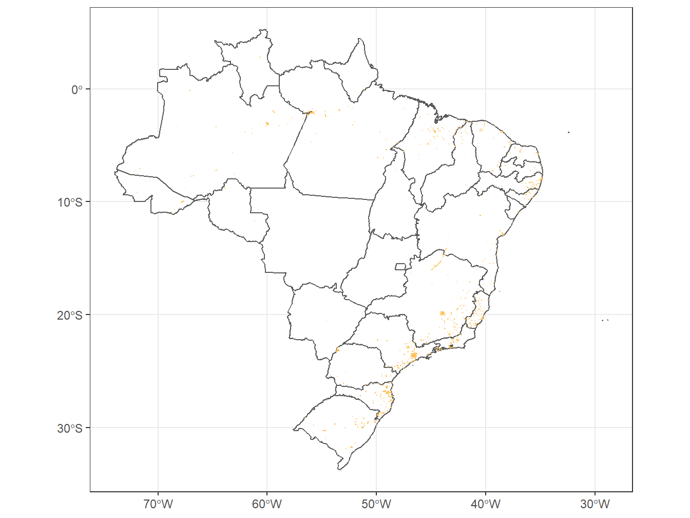
# Áreas de risco no município de Petrópolis/RJ
lookup_muni(name_muni = "Petrópolis") code_muni name_muni code_state name_state abbrev_state code_micro
3229 3303906 Petrópolis 33 Rio de Janeiro RJ 33015
name_micro code_meso name_meso code_immediate
3229 Serrana 3306 Metropolitana do Rio de Janeiro 330007
name_immediate code_intermediate name_intermediate
3229 Petrópolis 3303 Petrópolispetropolis <- read_municipality(code_muni = 3303906,
showProgress = F)
read_disaster_risk_area(year = 2010,
showProgress = F) %>%
dplyr::filter(name_muni == "Petropolis") %>%
ggplot()+
geom_sf(data = petropolis, alpha = 0)+
geom_sf(fill = "#2D3E50", color = "#FEBF57", size = .15)+
theme_bw()
8.18 Estabelecimentos de saúde
A função read_health_facilities() nos retorna os estabelecimentos de saúde presentes nos municípios brasileiros. Os dados são provenientes do Cadastro Nacional de Estabelecimentos de Saúde (CNES), originalmente coletados pelo Ministério da Saúde do Brasil.
Segundo o Ministério da Saúde, as coordenadas de cada unidade foram obtidas pelo CNES e validadas por meio de operações espaciais. Essas operações verificam se o ponto está no município, considerando um raio de 5.000 metros. Quando a coordenada não está correta, outras buscas são feitas em outros sistemas do Ministério da Saúde, como o DataSUS, e em serviços web, como o Google Maps. Por fim, se as coordenadas foram obtidas corretamente neste processo, são utilizadas as coordenadas da sede municipal.
A fonte do geocódigo utilizada está presente na coluna data_source do banco de dados. A data da última atualização dos dados é registrada nas colunas date_update e year_update. Além disso, cada estabelecimento de saúde apresenta um código de identificação, presente na coluna code_cnes.
Informações adicionais sobre os dados estão presentes em: https://dados.gov.br/dataset?q=CNES.
estab_saude <- read_health_facilities(showProgress = F)
estab_saude %>%
ggplot()+
geom_sf()+
theme_bw()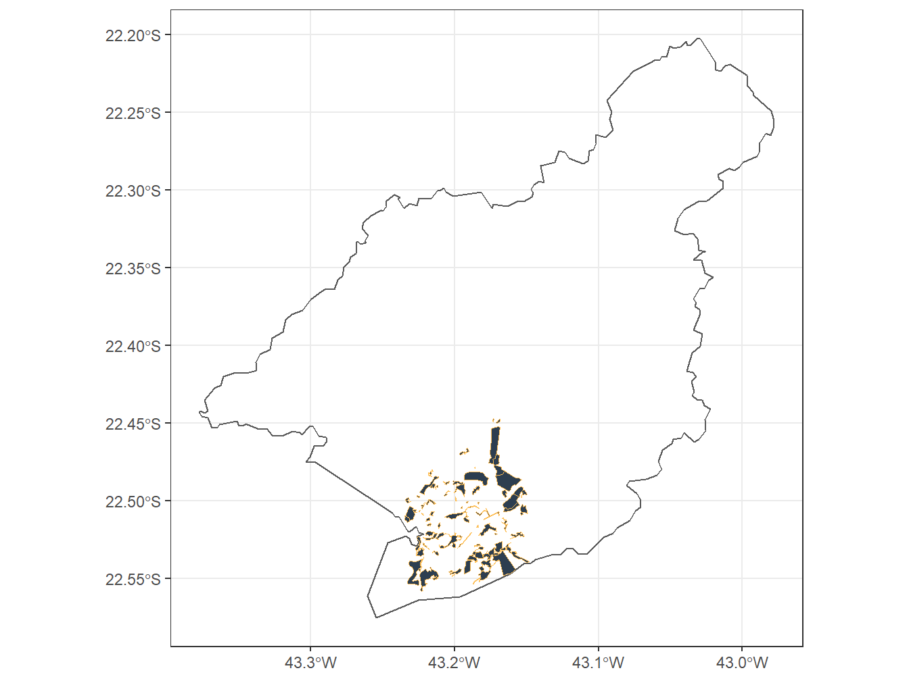
# Selecionando os estabelecimentos de saúde do município de Piracicaba/SP
lookup_muni(name_muni = "Piracicaba") code_muni name_muni code_state name_state abbrev_state code_micro
3700 3538709 Piracicaba 35 São Paulo SP 35028
name_micro code_meso name_meso code_immediate name_immediate
3700 Piracicaba 3506 Piracicaba 350040 Piracicaba
code_intermediate name_intermediate
3700 3510 Campinas## Carregando as delimitações espaciais do município de Piracicaba/SP
piracicaba <- read_municipality(code_muni = 3538709,
year = 2020,
showProgress = FALSE)
## Selecionando os estabelecimentos de saúde de Piracicaba/SP
pira_estab_saude <- estab_saude %>%
dplyr::filter(code_muni == 353870)
pira_estab_saude %>%
ggplot()+
geom_sf(data = piracicaba)+
geom_sf(data = pira_estab_saude)+
theme_bw()Vale destacar que na função read_health_facilities(), os códigos de identificação dos municípios (code_muni) estão representados pelos 6 primeiros dígitos dos 7 dígitos que compõe o código original. Por tanto, quando utilizar os códigos do municípios na função read_health_facilities(), use apenas os 6 primeiros dígitos.
8.19 Regiões de saúde
A função read_health_region() contém o banco de dados das regiões de saúde no Brasil para os anos de 1991, 1994, 1997, 2001, 2005 e 2013.
Estes dados são utilizados para orientar o planejamento regional e estadual dos serviços de saúde. Dentro disso, temos as macrorregiões de saúde que, em particular, são utilizadas para orientar o planejamento dos serviços de saúde de alta complexidade, serviços estes que envolvem maior economia de escala e estão concentrados em poucos municípios, pois geralmente são mais intensivos em tecnologia, onerosos e enfrentam escassez de profissionais especializados. Uma macrorregião compreende uma ou mais regiões de saúde.
# Regiões de saúde
reg_saude <- read_health_region(year = 2013,
macro = F,
showProgress = F) %>%
ggplot()+
geom_sf()+
theme_bw()+
labs(title = "Regiões de saúde")
reg_saude# Macrorregiões de saúde
macroreg_saude <- read_health_region(year = 2013,
macro = T,
showProgress = F) %>%
ggplot()+
geom_sf()+
theme_bw()+
labs(title = "Macrorregiões de saúde")
macroreg_saudeO argumento macro = da função read_health_region() aceita valores lógicos para representar as macrorregiões de saúde (macro = TRUE) ou representar apenas as regiões de saúde (macro = FALSE). Por padrão, caso não seja especificado o argumento, macro = FALSE.
# Selecionando as regiões e macrorregiões de saúde do estado de Goiás
## Regiões de saúde
GO_reg_saude <- read_health_region(year = 2013,
macro = F,
showProgress = F) %>%
dplyr::filter(abbrev_state == "GO") %>%
ggplot()+
geom_sf()+
theme_bw()+
labs(title = "Regiões de saúde - GO")+
geom_sf_text(aes(label = name_health_region), size = 1.8)
GO_reg_saude## Macrorregiões de saúde
GO_macroreg_saude <- read_health_region(year = 2013,
macro = T,
showProgress = F) %>%
dplyr::filter(abbrev_state == "GO") %>%
ggplot()+
geom_sf()+
theme_bw()+
labs(title = "Macrorregiões de saúde - GO")+
geom_sf_text(aes(label = name_health_macroregion), size = 1.8)
GO_macroreg_saude8.20 Escolas
A função read_schools() contém os dados do Censo Escolar coletados pelo Instituto Nacional de Estudos e Pesquisas Educacionais Anísio Teixeira (INEP), para o ano de 2020. Para mais informações, acesse: https://www.gov.br/inep/pt-br/acesso-a-informacao/dados-abertos/inep-data/catalogo-de-escolas/.
read_schools(year = 2020,
showProgress = F) %>% names() [1] "abbrev_state" "name_muni"
[3] "code_school" "name_school"
[5] "education_level" "education_level_others"
[7] "admin_category" "address"
[9] "phone_number" "government_level"
[11] "private_school_type" "private_government_partnership"
[13] "regulated_education_council" "service_restriction"
[15] "size" "urban"
[17] "location_type" "date_update"
[19] "geom" O banco de dados possui diversas informações, como por exemplo, o nome da escola (name_school), o nível escolar (education_level), tipos de administração (admin_category, government_level, private_school_type, private_government_partnership), dentre outras.
read_schools(year = 2020,
showProgress = F) %>%
ggplot()+
geom_sf()+
theme_bw()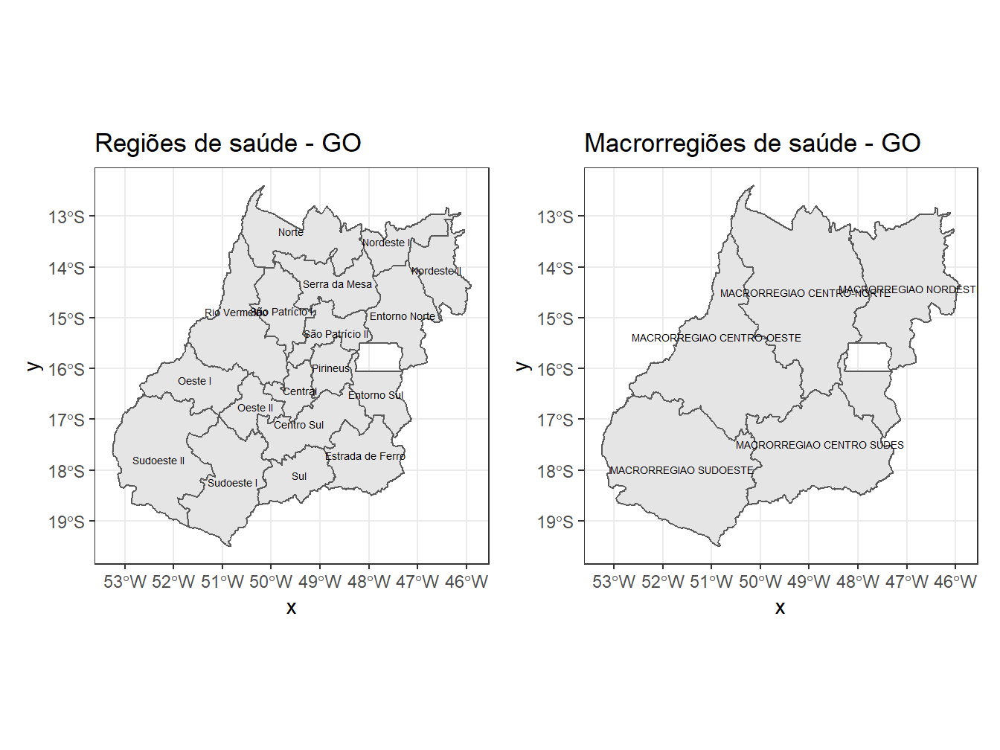
# Selecionando as escolas de Piracicaba/SP, categorizadas por tipo de administração
piracicaba <- read_municipality(code_muni = 3538709,
year = 2020,
showProgress = FALSE)
read_schools(year = 2020,
showProgress = F) %>%
dplyr::filter(name_muni == "Piracicaba") %>%
ggplot()+
geom_sf(data = piracicaba)+
geom_sf(aes(color = government_level), size = 1.2)+
theme_bw()+
labs(color = "Tipo administrativo")8.21 Áreas de Concentração de População
A função read_urban_concentrations() lê os dados oficiais das áreas de concentração urbana (Áreas de Concentração de População) do Brasil, que representa um município que se encaixa nessa classificação. Os dados originais foram gerados pelo IBGE, cuja metodologia detalhada pode ser acessada em: https://www.ibge.gov.br/apps/arranjos_populacionais/2015/pdf/publicacao.pdf.
read_urban_concentrations(year = 2015, showProgress = F) %>% names() [1] "code_urban_concentration" "name_urban_concentration"
[3] "code_muni" "name_muni"
[5] "pop_total_2010" "pop_urban_2010"
[7] "pop_rural_2010" "code_state"
[9] "abbrev_state" "name_state"
[11] "geom" O banco de dados traz como variáveis o nome das áreas de concentração urbana (name_urban_concentration), bem como os nomes dos municípios e estados que fazem parte. Além disso, as colunas pop_total_2010, pop_urban_2010 e pop_rural_2010 trazem o número da população total, urbana e rural, respectivamente, de acordo com o Censo 2010 realizado pelo IBGE.
read_urban_concentrations(year = 2015,
showProgress = F) %>%
ggplot()+
geom_sf()+
theme_bw()# Inserindo as áreas de concentração urbana ao mapa do Brasil, dividido por estados
estados <- read_state(code_state = "all",
year = 2019,
showProgress = F)
read_urban_concentrations(year = 2015,
showProgress = F) %>%
ggplot()+
geom_sf(data = estados, alpha = 0)+
geom_sf(fill = "orange")+
theme_bw()
# Áreas de concentração urbana de São Paulo
municipios_sp <- read_municipality(code_muni = "SP",
year = 2010,
showProgress = F)
read_urban_concentrations(year = 2015,
showProgress = F) %>%
dplyr::filter(abbrev_state == "SP") %>%
ggplot()+
geom_sf(data = municipios_sp, fill = "lightgrey")+
geom_sf(fill = "orange")+
theme_bw()Using year 2010Using year 2015# Mapa de calor com a população urbana das áreas de concentração urbana do Paraná
municipios_pr <- read_municipality(code_muni = "PR",
year = 2010,
showProgress = F)
read_urban_concentrations(year = 2015,
showProgress = F) %>%
dplyr::filter(abbrev_state == "PR") %>%
ggplot()+
geom_sf(data = municipios_pr, fill = "lightgrey")+
geom_sf(aes(fill = pop_urban_2010))+
scale_fill_viridis_c(direction = -1, limits = c(3000, 1750000))+
theme_bw()+
labs(fill = "População urbana \nCenso 2010")Using year 2010Using year 2015
Para confeccionar um mapa de calor de acordo com a população urbana das áreas de concentração urbana do Paraná, definimos o número de habitantes urbanos (pop_urban_2010) como parâmetro do argumento fill =, dentro da aes() respectiva ao banco de dados das áreas de concentração urbana. Além disso, com a função scale_fill_viridis_c() definimos os limites de escala a serem considerados no mapa de calor, tendo valor mínimo de 3.000 e máximo de 1.750.000 habitantes.
8.22 Arranjos populacionais
A função read_pop_arrangements() retorna os dados oficiais sobre arranjos populacionais, que são agrupamentos de dois ou mais municípios com forte integração populacional, devido aos movimentos pendulares para trabalho ou estudo, ou à contiguidade entre manchas urbanas.
Os dados originais foram gerados pelo Instituto Brasileiro de Geografia e Estatística (IBGE), cuja metodologia detalhada pode ser acessada em: https://www.ibge.gov.br/apps/arranjos_populacionais/2015/pdf/publicacao.pdf.
read_pop_arrangements(year = 2015, showProgress = F) %>% names() [1] "code_pop_arrangement" "name_pop_arrangement" "code_muni"
[4] "name_muni" "pop_total_2010" "pop_urban_2010"
[7] "pop_rural_2010" "code_state" "abbrev_state"
[10] "name_state" "geom" De modo semelhante ao banco de dados das áreas de concentração urbana, este conjunto de dados contém a nomenclatura dos arranjos populacionais (name_pop_arrangement), o município e estado que faz parte e as populações totais, urbana e rural do arranjo, de acordo com o Censo 2010 do IBGE.
read_pop_arrangements(year = 2015,
showProgress = F) %>%
ggplot()+
geom_sf()+
theme_bw()# Selecionando os arranjos populacionais do RJ
municipios_rj <- read_municipality(code_muni = "RJ",showProgress = F)
read_pop_arrangements(year = 2015,
showProgress = F) %>%
dplyr::filter(abbrev_state == "RJ") %>%
ggplot()+
geom_sf(data = municipios_rj)+
geom_sf(fill = "orange")+
theme_bw()Using year 2010Using year 2015# Mapa de calor com a população total dos arranjos populacionais do RJ
municipios_rj <- read_municipality(code_muni = "RJ",showProgress = F)
read_pop_arrangements(year = 2015,
showProgress = F) %>%
dplyr::filter(abbrev_state == "RJ") %>%
ggplot()+
geom_sf(data = municipios_rj)+
geom_sf(aes(fill = pop_total_2010))+
scale_fill_viridis_c(direction = -1, limits = c(8000, 6400000))+
theme_bw()Using year 2010Using year 2015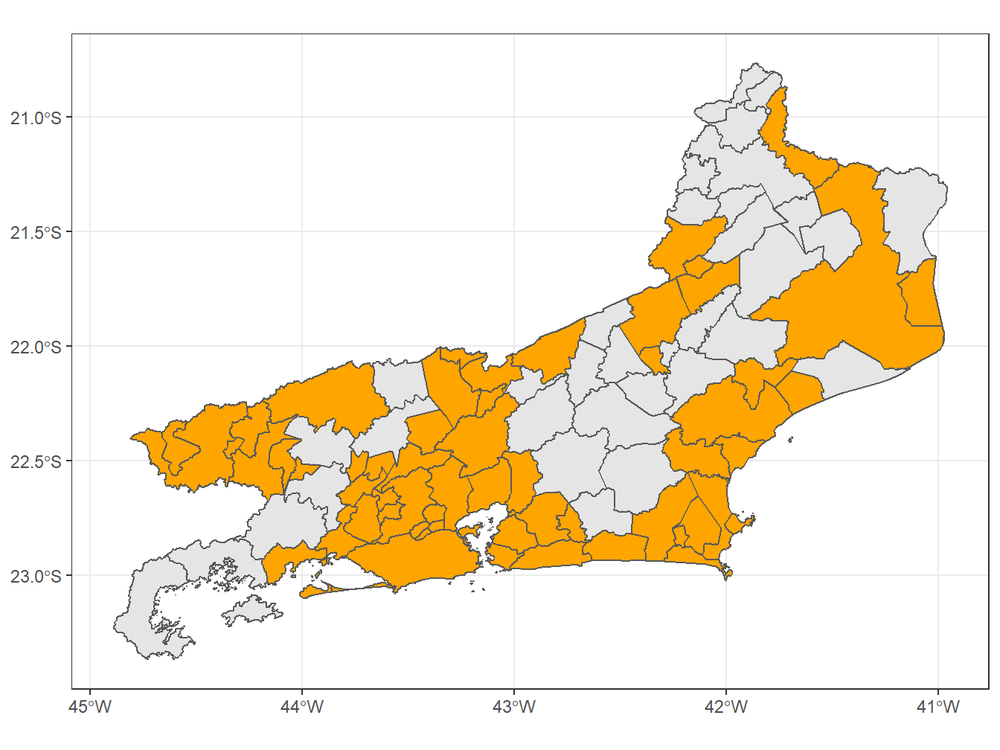
8.23 Setor censitário
O setor censitário é a unidade territorial estabelecida pelo IBGE para planejar e realizar levantamentos de dados do Censo e Pesquisas Estatísticas. É formado por uma área contínua, considerando a Divisão Político-Administrativa, situada em um único quadro urbano ou rural, com dimensão e número de domicílios que permitam o levantamento das informações por um recenseador dentro do prazo determinado para a coleta. Assim sendo, cada recenseador procederá à coleta de informações tendo como meta a cobertura do setor censitário que lhe é designado.
Informações complementares estão disponíveis em: https://www.ibge.gov.br/geociencias/organizacao-do-territorio/malhas-territoriais/26565-malhas-de-setores-censitarios-divisoes-intramunicipais.html?=&t=downloads
A função read_census_tract() nos retorna os dados do setor censitário para os anos de 2000, 2010, 2017, 2019 e 2020.
read_census_tract(code_tract = "all",
year = 2020,
showProgress = F)O argumento code_tract = pode receber os seguintes valores: "all" para selecionar todos os dados dos setores censitários do Brasil; código/abreviação do estado para um estado em específico; e um código de 7 dígitos referentes aos municípios.
# Selecionando os setores censitários de Sergipe, divididos por zona, em 2010
read_census_tract(code_tract = "SE",
year = 2010,
showProgress = F) %>%
ggplot()+
geom_sf(aes(fill = zone))+
theme_bw()+
labs(fill = "Zona")Using year 2010# Selecionando os setores censitários de Sergipe, divididos por zona, em 2000
## Zona Rural
se_rur <- read_census_tract(code_tract = "SE",
year = 2000,
zone = "rural",
showProgress = F) %>%
ggplot()+
geom_sf()+
theme_bw()+
labs(title = "Setor censitário - Área rural \nSergipe, 2000")
se_rur
# Zona Urbana
se_urb <- read_census_tract(code_tract = "SE",
year = 2000,
zone = "urban",
showProgress = F) %>%
ggplot()+
geom_sf()+
theme_bw()+
labs(title = "Setor censitário - Área urbana \nSergipe, 2000")
se_urbUsing year 2000Using data of Rural census tractsUsing year 2000Using data of Urban census tractsNo caso dos setores censitários do ano de 2000, as zonas rural e urbana estão em banco de dados separados. Para isso, precisamos utilizar o argumento zone = para especificar a zona rural (zone = "rural") ou urbana (zone = "urban"). Caso o argumento não seja declarado, por padrão, adota-se a zona urbana.
8.24 Áreas de ponderação
Define-se área de ponderação como sendo uma unidade geográfica, formada por um agrupamento mutuamente exclusivo de setores censitários contíguos, para a aplicação dos procedimentos de calibração dos pesos de forma a produzir estimativas compatíveis com algumas das informações conhecidas para a população como um todo (IBGE, 2010).
A função read_weighting_area() nos retorna as áreas de ponderação para o ano de 2010.
read_weighting_area(code_weighting = "all",
year = 2010,
showProgress = F) %>%
ggplot()+
geom_sf()+
theme_bw()
# Selecionando as áreas de ponderação do Distrito Federal
read_weighting_area(code_weighting = "DF",
year = 2010,
showProgress = F) %>%
ggplot()+
geom_sf()+
theme_bw()Using year 2010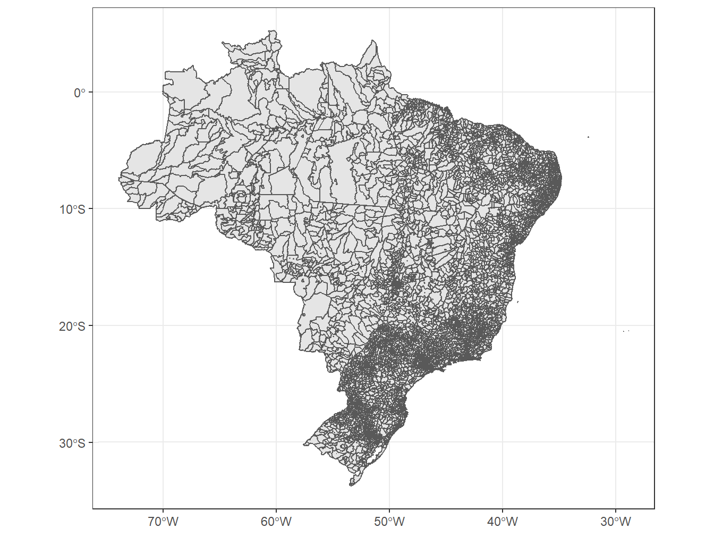
# Selecionando as áreas de ponderação do município de Presidente Prudente/SP
lookup_muni(name_muni = "Presidente Prudente") code_muni name_muni code_state name_state abbrev_state
3731 3541406 Presidente Prudente 35 São Paulo SP
code_micro name_micro code_meso name_meso
3731 35036 Presidente Prudente 3508 Presidente Prudente
code_immediate name_immediate code_intermediate name_intermediate
3731 350018 Presidente Prudente 3505 Presidente Prudenteread_weighting_area(code_weighting = 3541406,
year = 2010,
showProgress = F) %>%
ggplot()+
geom_sf()+
theme_bw()8.25 Grade estatística do IBGE
As grades estatísticas se constituem em uma forma de disseminação de dados que permite análises detalhadas e independentes das divisões territoriais, visando atender, principalmente, a necessidade de se ter dados em unidades geográficas pequenas e estáveis ao longo do tempo, facilitando sobremaneira a comparação nacional e internacional e fornecendo um aumento significativo do detalhamento, particularmente nas regiões rurais, em comparação com metodologias anteriores (IBGE, 2016).
A função read_statistical_grid() nos retorna as grades estatísticas do IBGE, com dimensão de 200 x 200 metros, para o ano de 2010. Cada quadrante das grades são representados por um código de 7 dígitos.
read_statistical_grid(code_grid = "all",
year = 2010,
showProgress = F)8.25.1 Tabela de correspondência
A grid_state_correspondence_table carrega uma tabela de correspondência indicando quais quadrantes da grade estatística do IBGE se cruzam com cada estado.
grid_state_correspondence_table %>% head(10) name_state abbrev_state code_grid
1 Acre AC ID_50
2 Acre AC ID_51
3 Acre AC ID_60
4 Acre AC ID_61
65 Alagoas AL ID_57
66 Alagoas AL ID_58
23 Amapá AP ID_74
24 Amapá AP ID_75
25 Amapá AP ID_84
26 Amapá AP ID_85